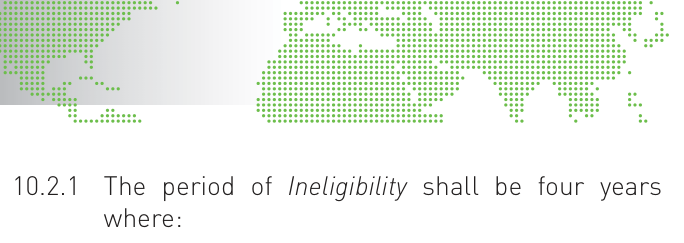

World Anti-Doping Code · Code
Edition 2015 (2018 amendments) · effective 1 April 2018 · superseded
Retrieved on 25 November 2026 from https://www.wada-ama.org/sites/default/files/resources/files/wada_anti-doping_code_2018_english_final.pdf
Editions: 2027 (current) · 2021 · 2015 (2019 amendments) · 2015 (2018 amendments) · 2015 · 2009 · 2003
p. 1
p. 2
World Anti-Doping Code 2015 with 2018 amendments
The World Anti-Doping Code was first adopted in 2003, took effect in 2004, and was then amended effective 1 January 2009. The following document incorporates revisions to the World Anti-Doping Code that were approved by the World Anti-Doping Agency Foundation Board in Johannesburg, South Africa on 15 November 2013. The revised 2015 World Anti-Doping Code is effective as of 1 January 2015. This version of the document also incorporates amendments that were adopted by the World Anti-Doping Agency Foundation Board in Seoul, Korea on 16 November 2017 and are effective as of 1 April 2018.
Published by:
World Anti-Doping Agency Stock Exchange Tower 800 Place Victoria (Suite 1700) PO Box 120 Montreal, Quebec Canada H4Z 1B7
URL: www.wada-ama.org
Tel:
Fax:
+1 514 904 9232
+1 514 904 8650
E-mail: code@wada-ama.org
p. 3
p. 4
p. 5
p. 6
p. 7
p. 8
p. 9
21.2 ROLES AND RESPONSIBILITIES OF ATHLETE
21.3 ROLES AND RESPONSIBILITIES OF REGIONAL
PART FOUR ACCEPTANCE, COMPLIANCE, MODIFICATION AND INTERPRETATION
p. 10
p. 11
PURPOSE, SCOPE AND ORGANIZATION OF THE WORLD ANTI-DOPING PROGRAM AND THE CODE
The purposes of the World Anti-Doping Code and the World Anti-Doping Program which supports it are:
- To protect the Athletes' fundamental right to participate in doping-free sport and thus promote health, fairness and equality for Athletes worldwide, and
- To ensure harmonized, coordinated and effective anti-doping programs at the international and national level with regard to detection, deterrence and prevention of doping.
The Code
The Code is the fundamental and universal document upon which the World Anti-Doping Program in sport is based. The purpose of the Code is to advance the anti-doping effort through universal harmonization of core anti-doping elements. It is intended to be specific enough to achieve complete harmonization on issues where uniformity is required, yet general enough in other areas to permit flexibility on how agreed-upon anti-doping principles are implemented. The Code has been drafted giving consideration to the principles of proportionality and human rights.
[Comment: The Olympic Charter and the International Convention against Doping in Sport 2005 adopted in Paris on 19 October 2005 ("UNESCO Convention"), both recognize the prevention of and the fight against doping in sport as a critical part of the mission of the International Olympic Committee and UNESCO, and also recognize the fundamental role of the Code.]
p. 12
The World Anti-Doping Program
The World Anti-Doping Program encompasses all of the elements needed in order to ensure optimal harmonization and best practice in international and national anti-doping programs. The main elements are:
Level 1: The Code
- Level 2: International Standards
- Level 3: Models of Best Practice and Guidelines
International Standards
International Standards for different technical and operational areas within the anti-doping program have been and will be developed in consultation with the Signatories and governments and approved by WADA. The purpose of the International Standards is harmonization among Anti-Doping Organizations responsible for specific technical and operational parts of anti-doping programs. Adherence to the International Standards is mandatory for compliance with the Code. The International Standards may be revised from time to time by the WADA Executive Committee after reasonable consultation with the Signatories, governments and other relevant stakeholders. International Standards and all revisions will be published on the WADA website and shall become effective on the date specified in the International Standard or revision.
[Comment: The International Standards contain much of the technical detail necessary for implementing the Code. International Standards will, in consultation with the Signatories, governments and other relevant stakeholders, be developed by experts and set forth in separate documents. It is important that the WADA Executive Committee be able to make timely changes to the International Standards without requiring any amendment of the Code.]
p. 13
Models of Best Practice and Guidelines
Models of best practice and guidelines based on the Code and International Standards have been and will be developed to provide solutions in different areas of anti-doping. The models and guidelines will be recommended by WADA and made available to Signatories and other relevant stakeholders, but will not be mandatory. In addition to providing models of anti-doping documentation, WADA will also make some training assistance available to the Signatories.
[Comment: These model documents may provide alternatives from which stakeholders may select. Some stakeholders may choose to adopt the model rules and other models of best practices verbatim. Others may decide to adopt the models with modifications. Still other stakeholders may choose to develop their own rules consistent with the general principles and specific requirements set forth in the Code.
Model documents or guidelines for specific parts of anti-doping work have been developed and may continue to be developed based on generally recognized stakeholder needs and expectations.]
p. 14
FUNDAMENTAL RATIONALE FOR THE WORLD ANTI-DOPING CODE
Anti-doping programs seek to preserve what is intrinsically valuable about sport. This intrinsic value is often referred to as "the spirit of sport." It is the essence of Olympism, the pursuit of human excellence through the dedicated perfection of each person's natural talents. It is how we play true. The spirit of sport is the celebration of the human spirit, body and mind, and is reflected in values we find in and through sport, including:
- Ethics, fair play and honesty
- Health
- Excellence in performance
- Character and education
- Fun and joy
- Teamwork
- Dedication and commitment
- Respect for rules and laws
- Respect for self and other Participants
- Courage
- Community and solidarity
Doping is fundamentally contrary to the spirit of sport.
To fight doping by promoting the spirit of sport, the Code requires each Anti-Doping Organization to develop and implement education and prevention programs for Athletes, including youth, and Athlete Support Personnel.
p. 15
PART ONE DOPING CONTROL
p. 16
1 INTRODUCTION
Part One of the Code sets forth specific anti-doping rules and principles that are to be followed by organizations responsible for adopting, implementing or enforcing anti-doping rules within their authority, e.g., the International Olympic Committee, International Paralympic Committee, International Federations, National Olympic Committees and Paralympic Committees, Major Event Organizations, and National Anti-Doping Organizations. All such organizations are collectively referred to as Anti-Doping Organizations.
All provisions of the Code are mandatory in substance and must be followed as applicable by each Anti-Doping Organization and Athlete or other Person. The Code does not, however, replace or eliminate the need for comprehensive anti-doping rules to be adopted by each Anti-Doping Organization. While some provisions of the Code must be incorporated without substantive change by each Anti-Doping Organization in its own anti-doping rules, other provisions of the Code establish mandatory guiding principles that allow flexibility in the formulation of rules by each Anti-Doping Organization or establish requirements that must be followed by each Anti-Doping Organization but need not be repeated in its own anti-doping rules.
Anti-doping rules, like competition rules, are sport rules governing the conditions under which sport is played. Athletes or other Persons accept these rules as a condition of participation and shall be bound by these rules. Each Signatory shall establish rules and procedures to ensure that all Athletes or other Persons under the authority of the Signatory and its member organizations are informed of and agree to be bound by anti-doping rules in force of the relevant Anti-Doping Organizations.
Each Signatory shall establish rules and procedures to ensure that all Athletes or other Persons under the authority of the Signatory and its member organizations consent to the dissemination of their private data as required or authorized by the Code, and are bound by and compliant with Code anti-doping rules, and that the appropriate Consequences are imposed on those Athletes or other Persons who are not in conformity with those rules. These sport-specific rules and procedures, aimed at enforcing anti-doping rules in a global and harmonized way, are distinct in nature from criminal and civil proceedings. They are not intended to be subject to or limited by any national requirements and legal standards applicable to such proceedings, although they are intended to be applied in a manner which respects the principles of proportionality and human rights. When reviewing the facts and the law of a given case, all courts, arbitral hearing panels and other adjudicating bodies should be aware of and respect the distinct nature of the anti-doping rules in the Code and the fact that those rules represent the consensus of a broad spectrum of stakeholders around the world with an interest in fair sport.
p. 17
[Comment: Those Articles of the Code which must be incorporated into each Anti-Doping Organization's rules without substantive change are set forth in Article 23.2.2. For example, it is critical for purposes of harmonization that all Signatories base their decisions on the same list of anti-doping rule violations, the same burdens of proof and impose the same Consequences for the same anti-doping rule violations. These rules must be the same whether a hearing takes place before an International Federation, at the national level or before the Court of Arbitration for Sport.
Code provisions not listed in Article 23.2.2 are still mandatory in substance even though an Anti-Doping Organization is not required to incorporate them verbatim. Those provisions generally fall into two categories. First, some provisions direct Anti-Doping Organizations to take certain actions but there is no need to restate the provision in the Anti-Doping Organization's own anti-doping rules. For example, each Anti-Doping Organization must plan and conduct Testing as required by Article 5, but these directives to the Anti-Doping Organization need not be repeated in the Anti-Doping Organization's own rules. Second, some provisions are mandatory in substance but give each Anti-Doping Organization some flexibility in the implementation of the principles stated in the provision. As an example, it is not necessary for effective harmonization to force all Signatories to use one single results management and hearing process. At present, there are many different, yet equally effective processes for results management and hearings within different International Federations and different national bodies. The Code does not require absolute uniformity in results management and hearing procedures; it does, however, require that the diverse approaches of the Signatories satisfy principles stated in the Code.]
p. 18
1
ARTICLE 1 DEFINITION OF DOPING
Doping is defined as the occurrence of one or more of the anti-doping rule violations set forth in Article 2.1 through Article 2.10 of the Code.
ARTICLE 2 ANTI-DOPING RULE VIOLATIONS
The purpose of Article 2 is to specify the circumstances and conduct which constitute anti-doping rule violations. Hearings in doping cases will proceed based on the assertion that one or more of these specific rules have been violated.
Athletes or other Persons shall be responsible for knowing what constitutes an anti-doping rule violation and the substances and methods which have been included on the Prohibited List.
The following constitute anti-doping rule violations:
2.1 Presence of a Prohibited Substance or its Metabolites or Markers in an Athlete's Sample
Cited by 1
2.1.1 It is each Athlete's personal duty to ensure that no Prohibited Substance enters his or her body. Athletes are responsible for any Prohibited Substance or its Metabolites or Markers found to be present in their Samples. Accordingly, it is not necessary that intent, Fault, negligence or knowing Use on the Athlete's part be demonstrated in order to establish an anti-doping rule violation under Article 2.1.
[Comment to Article 2.1.1: An anti-doping rule violation is committed under this Article without regard to an Athlete's Fault. This rule has been referred to in various CAS decisions as "Strict Liability". An Athlete's Fault is taken into consideration in determining the Consequences of this anti-doping rule violation under Article 10. This principle has consistently been upheld by CAS.]
p. 19
2.1.2 Sufficient proof of an anti-doping rule violation under Article 2.1 is established by any of the following: presence of a Prohibited Substance or its Metabolites or Markers in the Athlete's A Sample where the Athlete waives analysis of the B Sample and the B Sample is not analyzed; or, where the Athlete's B Sample is analyzed and the analysis of the Athlete's B Sample confirms the presence of the Prohibited Substance or its Metabolites or Markers found in the Athlete's A Sample; or, where the Athlete's B Sample is split into two bottles and the analysis of the second bottle confirms the presence of the Prohibited Substance or its Metabolites or Markers found in the first bottle.
2.1.3 Excepting those substances for which a quantitative threshold is specifically identified in the Prohibited List, the presence of any quantity of a Prohibited Substance or its Metabolites or Markers in an Athlete's Sample shall constitute an anti-doping rule violation.
2.1.4 As an exception to the general rule of Article 2.1, the Prohibited List or International Standards may establish special criteria for the evaluation of Prohibited Substances that can also be produced endogenously.
[Comment to Article 2.1.2: The Anti-Doping Organization with results management responsibility may, at its discretion, choose to have the B Sample analyzed even if the Athlete does not request the analysis of the B Sample.]
p. 20
1
2.2 Use or Attempted Use by an Athlete of a Prohibited Substance or a Prohibited Method
Cited by 1
2.2.1 It is each Athlete's personal duty to ensure that no Prohibited Substance enters his or her body and that no Prohibited Method is Used. Accordingly, it is not necessary that intent, Fault, negligence or knowing Use on the Athlete's part be demonstrated in order to establish an anti-doping rule violation for Use of a Prohibited Substance or a Prohibited Method.
2.2.2 The success or failure of the Use or Attempted Use of a Prohibited Substance or Prohibited Method is not material. It is sufficient that the Prohibited Substance or Prohibited Method was Used or Attempted to be Used for an anti-doping rule violation to be committed.
[Comment to Article 2.2: It has always been the case that Use or Attempted Use of a Prohibited Substance or Prohibited Method may be established by any reliable means. As noted in the Comment to Article 3.2, unlike the proof required to establish an anti-doping rule violation under Article 2.1, Use or Attempted Use may also be established by other reliable means such as admissions by the Athlete, witness statements, documentary evidence, conclusions drawn from longitudinal profiling, including data collected as part of the Athlete Biological Passport, or other analytical information which does not otherwise satisfy all the requirements to establish "Presence" of a Prohibited Substance under Article 2.1.
For example, Use may be established based upon reliable analytical data from the analysis of an A Sample (without confirmation from an analysis of a B Sample) or from the analysis of a B Sample alone where the Anti-Doping Organization provides a satisfactory explanation for the lack of confirmation in the other Sample.]
[Comment to Article 2.2.2:
Demonstrating the "Attempted Use" of a Prohibited Substance or a Prohibited Method requires proof of intent on the Athlete's part. The fact that intent may be required to prove this particular anti-doping rule violation does not undermine the Strict Liability principle established for violations of Article 2.1 and violations of Article 2.2 in respect of Use of a Prohibited Substance or Prohibited Method.
An Athlete's Use of a Prohibited Substance constitutes an anti-doping rule violation unless such substance is not prohibited Out-of-Competition and the Athlete's Use takes place Out-of-Competition. (However, the presence of a Prohibited Substance or its Metabolites or Markers in a Sample collected In-Competition is a violation of Article 2.1 regardless of when that substance might have been administered.)]
p. 21
2.3 Evading, Refusing or Failing to Submit to Sample Collection
Cited by 8
Evading Sample collection, or without compelling justification, refusing or failing to submit to Sample collection after notification as authorized in applicable anti-doping rules.
2.4 Whereabouts Failures
Cited by 18
- IST 2019 – def-code-article-2.4-whereabouts-requirements
- IST 2019 – Art. 4.8.3
- IST 2019 – Art. 4.8.4
- IST 2019 – Art. 4.8.5
- IST 2019 – annex-i.1.2
- IST 2019 – comment-i.1.2
- IST 2019 – annex-i.1.3
- IST 2019 – comment-i.1.3
- IST 2019 – annex-i.1.4
- IST 2019 – comment-i.2.1
- IST 2019 – annex-i.2.4
- IST 2019 – comment-i.2.4
- IST 2019 – comment-i.5.1
- IST 2019 – comment-i.5.2-b
- IST 2019 – comment-i.5.3
- IST 2019 – annex-i.5.4
- IST 2019 – annex-i.5.5
- IST 2019 – annex-i.5.6
Any combination of three missed tests and/or filing failures, as defined in the International Standard for Testing and Investigations, within a twelve-month period by an Athlete in a Registered Testing Pool.
2.5 Tampering or Attempted Tampering with any part of Doping Control
Cited by 8
Conduct which subverts the Doping Control process but which would not otherwise be included in the definition of Prohibited Methods. Tampering shall include, without limitation, intentionally interfering or attempting to interfere with a Doping Control official, providing fraudulent information to an Anti-Doping Organization or intimidating or attempting to intimidate a potential witness.
[Comment to Article 2.3: For example, it would be an anti-doping rule violation of "evading Sample collection" if it were established that an Athlete was deliberately avoiding a Doping Control official to evade notification or Testing. A violation of
"failing to submit to Sample collection" may be based on either intentional or negligent conduct of the Athlete, while "evading" or "refusing" Sample collection contemplates intentional conduct by the Athlete.]
[Comment to Article 2.5: For example, this Article would prohibit altering identification numbers on a Doping Control form during Testing, breaking the B bottle at the time of B Sample analysis, or altering a Sample by the addition of a foreign substance.
Offensive conduct towards a Doping Control official or other Person involved in Doping Control which does not otherwise constitute Tampering shall be addressed in the disciplinary rules of sport organizations.]
p. 22
1
2.6 Possession of a Prohibited Substance or a Prohibited Method
2.6.1 Possession by an Athlete In-Competition of any Prohibited Substance or any Prohibited Method, or Possession by an Athlete Out-of-Competition of any Prohibited Substance or any Prohibited Method which is prohibited Out-of-Competition unless the Athlete establishes that the Possession is consistent with a Therapeutic Use Exemption ("TUE") granted in accordance with Article 4.4 or other acceptable justification.
2.6.2 Possession by an Athlete Support Person In-Competition of any Prohibited Substance or any Prohibited Method, or Possession by an Athlete Support Person Out-of-Competition of any Prohibited Substance or any Prohibited Method which is prohibited Out-of-Competition in connection with an Athlete, Competition or training, unless the Athlete Support Person establishes that the Possession is consistent with a TUE granted to an Athlete in accordance with Article 4.4 or other acceptable justification.
2.7 Trafficking or Attempted Trafficking in any Prohibited Substance or Prohibited Method
[Comment to Articles 2.6.1 and 2.6.2: Acceptable justification would not include, for example, buying or Possessing a Prohibited Substance for purposes of giving it to a friend or relative, except under justifiable medical circumstances where that Person had a physician's prescription, e.g., buying Insulin for a diabetic child.]
[Comment to Article 2.6.2: Acceptable justification would include, for example, a team doctor carrying Prohibited Substances for dealing with acute and emergency situations.]
p. 23
2.8 Administration or Attempted Administration to any Athlete In-Competition of any Prohibited Substance or Prohibited Method, or Administration or Attempted Administration to any Athlete Out-of-Competition of any Prohibited Substance or any Prohibited Method that is prohibited Out-of-Competition
2.9 Complicity
Assisting, encouraging, aiding, abetting, conspiring, covering up or any other type of intentional complicity involving an anti-doping rule violation, Attempted anti-doping rule violation or violation of Article 10.12.1 by another Person.
2.10 Prohibited Association
Association by an Athlete or other Person subject to the authority of an Anti-Doping Organization in a professional or sport-related capacity with any Athlete Support Person who:
2.10.1 If subject to the authority of an Anti-Doping Organization, is serving a period of Ineligibility; or
2.10.2 If not subject to the authority of an Anti-Doping Organization, and where Ineligibility has not been addressed in a results management process pursuant to the Code, has been convicted or found in a criminal, disciplinary or professional proceeding to have engaged in conduct which would have constituted a violation of anti-doping rules if Code-compliant rules had been applicable to such Person. The disqualifying status of such Person shall be in force for the longer of six years from the criminal, professional or disciplinary decision or the duration of the criminal, disciplinary or professional sanction imposed; or
2.10.3 Is serving as a front or intermediary for an individual described in Article 2.10.1 or 2.10.2.
p. 24
1 In order for this provision to apply, it is necessary that the Athlete or other Person has previously been advised in writing by an Anti-Doping Organization with jurisdiction over the Athlete or other Person, or by WADA, of the Athlete Support Person's disqualifying status and the potential Consequence of prohibited association and that the Athlete or other Person can reasonably avoid the association. The Anti-Doping Organization shall also use reasonable efforts to advise the Athlete Support Person who is the subject of the notice to the Athlete or other Person that the Athlete Support Person may, within 15 days, come forward to the Anti-Doping Organization to explain that the criteria described in Articles 2.10.1 and 2.10.2 do not apply to him or her. (Notwithstanding Article 17, this Article applies even when the Athlete Support Person's disqualifying conduct occurred prior to the effective date provided in Article 25.)
The burden shall be on the Athlete or other Person to establish that any association with Athlete Support Personnel described in Article 2.10.1 or 2.10.2 is not in a professional or sport-related capacity.
Anti-Doping Organizations that are aware of Athlete Support Personnel who meet the criteria described in Article 2.10.1, 2.10.2, or 2.10.3 shall submit that information to WADA.
[Comment to Article 2.10: Athletes and other Persons must not work with coaches, trainers, physicians or other Athlete Support Personnel who are Ineligible on account of an anti-doping rule violation or who have been criminally convicted or professionally disciplined in relation to doping. Some examples of the types of association which are prohibited include: obtaining training, strategy, technique, nutrition or medical advice; obtaining therapy, treatment or prescriptions; providing any bodily products for analysis; or allowing the Athlete Support Person to serve as an agent or representative. Prohibited association need not involve any form of compensation.]
p. 25
ARTICLE 3 PROOF OF DOPING
3.1 Burdens and Standards of Proof
The Anti-Doping Organization shall have the burden of establishing that an anti-doping rule violation has occurred. The standard of proof shall be whether the Anti-Doping Organization has established an anti-doping rule violation to the comfortable satisfaction of the hearing panel, bearing in mind the seriousness of the allegation which is made. This standard of proof in all cases is greater than a mere balance of probability but less than proof beyond a reasonable doubt. Where the Code places the burden of proof upon the Athlete or other Person alleged to have committed an anti-doping rule violation to rebut a presumption or establish specified facts or circumstances, the standard of proof shall be by a balance of probability.
3.2 Methods of Establishing Facts and Presumptions
Facts related to anti-doping rule violations may be established by any reliable means, including admissions. The following rules of proof shall be applicable in doping cases:
3.2.1 Analytical methods or decision limits approved by WADA after consultation within the relevant scientific community and which have been
[Comment to Article 3.1: This standard of proof required to be met by the Anti-Doping Organization is comparable to the standard which is applied in most countries to cases involving professional misconduct.]
[Comment to Article 3.2: For example, an Anti-Doping Organization may establish an anti-doping rule violation under Article 2.2 based on the Athlete's admissions, the credible testimony of third Persons, reliable documentary evidence, reliable analytical data from either an A or B Sample as provided in the Comments to Article 2.2, or conclusions drawn from the profile of a series of the Athlete's blood or urine Samples, such as data from the Athlete Biological Passport.]
p. 26
1 the subject of peer review are presumed to be scientifically valid. Any Athlete or other Person seeking to rebut this presumption of scientific validity shall, as a condition precedent to any such challenge, first notify WADA of the challenge and the basis of the challenge. CAS, on its own initiative, may also inform WADA of any such challenge. At WADA's request, the CAS panel shall appoint an appropriate scientific expert to assist the panel in its evaluation of the challenge. Within 10 days of WADA's receipt of such notice, and WADA's receipt of the CAS file, WADA shall also have the right to intervene as a party, appear amicus curiae or otherwise provide evidence in such proceeding.
3.2.2 WADA-accredited laboratories, and other laboratories approved by WADA, are presumed to have conducted Sample analysis and custodial procedures in accordance with the International Standard for Laboratories. The Athlete or other Person may rebut this presumption by establishing that a departure from the International Standard for Laboratories occurred which could reasonably have caused the Adverse Analytical Finding.
If the Athlete or other Person rebuts the preceding presumption by showing that a departure from the International Standard for Laboratories occurred which could reasonably have caused the Adverse Analytical Finding, then the Anti-Doping Organization shall have the burden to establish that such departure did not cause the Adverse Analytical Finding.
[Comment to Article 3.2.2: The burden is on the Athlete or other Person to establish, by a balance of probability, a departure from the International Standard for Laboratories that could reasonably have caused the Adverse Analytical Finding. If the Athlete or other Person does so, the burden shifts to the Anti-Doping Organization to prove to the comfortable satisfaction of the hearing panel that the departure did not cause the Adverse Analytical Finding.]
p. 27
3.2.3 Departures from any other International Standard or other anti-doping rule or policy set forth in the Code or Anti-Doping Organization rules which did not cause an Adverse Analytical Finding or other anti-doping rule violation shall not invalidate such evidence or results. If the Athlete or other Person establishes a departure from another International Standard or other anti-doping rule or policy which could reasonably have caused an anti-doping rule violation based on an Adverse Analytical Finding or other anti-doping rule violation, then the Anti-Doping Organization shall have the burden to establish that such departure did not cause the Adverse Analytical Finding or the factual basis for the anti-doping rule violation.
Cited by 1
3.2.4 The facts established by a decision of a court or professional disciplinary tribunal of competent jurisdiction which is not the subject of a pending appeal shall be irrebuttable evidence against the Athlete or other Person to whom the decision pertained of those facts unless the Athlete or other Person establishes that the decision violated principles of natural justice.
3.2.5 The hearing panel in a hearing on an anti-doping rule violation may draw an inference adverse to the Athlete or other Person who is asserted to have committed an anti-doping rule violation based on the Athlete's or other Person's refusal, after a request made in a reasonable time in advance of the hearing, to appear at the hearing (either in person or telephonically as directed by the hearing panel) and to answer questions from the hearing panel or the Anti-Doping Organization asserting the anti-doping rule violation.
p. 28
1
ARTICLE 4 THE PROHIBITED LIST
4.1 Publication and Revision of the Prohibited List
WADA shall, as often as necessary and no less often than annually, publish the Prohibited List as an International Standard. The proposed content of the Prohibited List and all revisions shall be provided in writing promptly to all Signatories and governments for comment and consultation. Each annual version of the Prohibited List and all revisions shall be distributed promptly by WADA to each Signatory, WADA-accredited or approved laboratory, and government, and shall be published on WADA's website, and each Signatory shall take appropriate steps to distribute the Prohibited List to its members and constituents. The rules of each Anti-Doping Organization shall specify that, unless provided otherwise in the Prohibited List or a revision, the Prohibited List and revisions shall go into effect under the Anti-Doping Organization's rules three months after publication of the Prohibited List by WADA without requiring any further action by the Anti-Doping Organization.
4.2 Prohibited Substances and Prohibited Methods Identified on the Prohibited List
4.2.1 Prohibited Substances and Prohibited Methods
The Prohibited List shall identify those Prohibited Substances and Prohibited Methods which are prohibited as doping at all times (both In-Competition and Out-of-Competition) because of their potential to enhance performance in future Competitions or their masking potential, [Comment to Article 4.1: The Prohibited List will be revised and published on an expedited basis whenever the need arises. However, for the sake of predictability, a new Prohibited List will be published every year whether or not changes have been made. WADA will always have the most current Prohibited List published on its website. The Prohibited List is an integral part of the International Convention against Doping in Sport. WADA will inform the Director-General of UNESCO of any change to the Prohibited List.]
p. 29
and those substances and methods which are prohibited In-Competition only. The Prohibited List may be expanded by WADA for a particular sport. Prohibited Substances and Prohibited Methods may be included in the Prohibited List by general category (e.g., anabolic agents) or by specific reference to a particular substance or method.
4.2.2 Specified Substances
For purposes of the application of Article 10, all Prohibited Substances shall be Specified Substances except substances in the classes of anabolic agents and hormones and those stimulants and hormone antagonists and modulators so identified on the Prohibited List. The category of Specified Substances shall not include Prohibited Methods.
4.2.3 New Classes of Prohibited Substances
In the event WADA expands the Prohibited List by adding a new class of Prohibited Substances in accordance with Article 4.1, WADA's Executive Committee shall determine whether any or all Prohibited Substances within the new class of Prohibited Substances shall be considered Specified Substances under Article 4.2.2.
| [Comment to Article 4.2.1: Out-of- Competition Use of a substance which is only prohibited In-Competition is not an anti-doping rule violation | unless an Adverse Analytical Finding for the substance or its Metabolites or Markers is reported for a Sample collected In-Competition.] |
|---|---|
| [Comment to Article 4.2.2: The Specified Substances identified in Article 4.2.2 should not in any way be considered less important or less dangerous than other doping | substances. Rather, they are simply substances which are more likely to have been consumed by an Athlete for a purpose other than the enhancement of sport performance.] |
p. 30
1
4.3 Criteria for Including Substances and Methods on the Prohibited List
WADA shall consider the following criteria in deciding whether to include a substance or method on the Prohibited List:
4.3.1 A substance or method shall be considered for inclusion on the Prohibited List if WADA, in its sole discretion, determines that the substance or method meets any two of the following three criteria:
4.3.1.1 Medical or other scientific evidence, pharmacological effect or experience that the substance or method, alone or in combination with other substances or methods, has the potential to enhance or enhances sport performance;
4.3.1.2 Medical or other scientific evidence, pharmacological effect or experience that the Use of the substance or method represents an actual or potential health risk to the Athlete;
4.3.1.3 WADA's determination that the Use of the substance or method violates the spirit of sport described in the introduction to the Code.
4.3.2 A substance or method shall also be included on the Prohibited List if WADA determines there is medical or other scientific evidence, pharmacological effect or experience that
[Comment to Article 4.3.1.1: This Article anticipates that there may be substances that, when used alone, are not prohibited but which will be prohibited if used in combination with certain other substances. A substance which is added to the Prohibited List because it has the potential to enhance performance only in combination with another substance shall be so noted and shall be prohibited only if there is evidence relating to both substances in combination.]
p. 31
the substance or method has the potential to mask the Use of other Prohibited Substances or Prohibited Methods.
4.3.3 WADA's determination of the Prohibited Substances and Prohibited Methods that will be included on the Prohibited List, the classification of substances into categories on the Prohibited List, and the classification of a substance as prohibited at all times or In-Competition only, is final and shall not be subject to challenge by an Athlete or other Person based on an argument that the substance or method was not a masking agent or did not have the potential to enhance performance, represent a health risk or violate the spirit of sport.
4.4 Therapeutic Use Exemptions ("TUEs")
4.4.1 The presence of a Prohibited Substance or its Metabolites or Markers, and/or the Use or Attempted Use, Possession or Administration or Attempted Administration of a Prohibited Substance or Prohibited Method shall not be considered an anti-doping rule violation if it is consistent with the provisions of a TUE granted in accordance with the International Standard for Therapeutic Use Exemptions.
4.4.2 An Athlete who is not an International-Level Athlete should apply to his or her National Anti-Doping Organization for a TUE. If the National Anti-Doping Organization denies the application, the Athlete may appeal exclusively to the national-level appeal body described in Articles 13.2.2 and 13.2.3.
Cited by 1
[Comment to Article 4.3.2: As part of the process each year, all Signatories, governments and other interested Persons are invited to provide comments to WADA on the content of the Prohibited List.]
p. 32
1
4.4.3 An Athlete who is an International-Level Athlete should apply to his or her International Federation.
Cited by 1
4.4.3.1 Where the Athlete already has a TUE granted by his or her National Anti-Doping Organization for the substance or method in question, if that TUE meets the criteria set out in the International Standard for Therapeutic Use Exemptions, then the International Federation must recognize it. If the International Federation considers that the TUE does not meet those criteria and so refuses to recognize it, it must notify the Athlete and his or her National Anti-Doping Organization promptly, with reasons. The Athlete or the National Anti-Doping Organization shall have 21 days from such notification to refer the matter to WADA for review. If the matter is referred to WADA for review, the TUE granted by the National Anti-Doping Organization remains valid for national-level Competition and Out-of-Competition Testing (but is not valid for international-level Competition) pending WADA's decision. If the matter is not referred to WADA for review, the TUE becomes invalid for any purpose when the 21-day review deadline expires.
4.4.3.2 If the Athlete does not already have a TUE granted by his or her National
[Comment to Article 4.4.3: If the International Federation refuses to recognize a TUE granted by a National Anti-Doping Organization only because medical records or other information are missing that are needed to demonstrate satisfaction with the criteria in the International Standard for Therapeutic Use Exemptions, the matter should not be referred to WADA. Instead, the file should be completed and re-submitted to the International Federation.
If an International Federation chooses to test an Athlete who is not an International-Level Athlete, it must recognize a TUE granted to that Athlete by his or her National Anti-Doping Organization.]
p. 33
Anti-Doping Organization for the substance or method in question, the Athlete must apply directly to his or her International Federation for a TUE as soon as the need arises. If the International Federation (or the National Anti-Doping Organization, where it has agreed to consider the application on behalf of the International Federation) denies the Athlete's application, it must notify the Athlete promptly, with reasons. If the International Federation grants the Athlete's application, it must notify not only the Athlete but also his or her National Anti-Doping Organization, and if the National Anti-Doping Organization considers that the TUE does not meet the criteria set out in the International Standard for Therapeutic Use Exemptions, it has 21 days from such notification to refer the matter to WADA for review. If the National Anti-Doping Organization refers the matter to WADA for review, the TUE granted by the International Federation remains valid for international-level Competition and Out-of-Competition Testing (but is not valid for national-level Competition) pending WADA's decision. If the National Anti-Doping Organization does not refer the matter to WADA for review, the TUE granted by the International Federation becomes valid for national-level Competition as well when the 21-day review deadline expires.
4.4.4 A Major Event Organization may require Athletes to apply to it for a TUE if they wish to Use a Prohibited Substance or a Prohibited Method in connection with the Event. In that case:
p. 34
1
4.4.4.1 The Major Event Organization must ensure a process is available for an Athlete to apply for a TUE if he or she does not already have one. If the TUE is granted, it is effective for its Event only.
4.4.4.2 Where the Athlete already has a TUE granted by his or her National Anti-Doping Organization or International Federation, if that TUE meets the criteria set out in the International Standard for Therapeutic Use Exemptions, the Major Event Organization must recognize it. If the Major Event Organization decides the TUE does not meet those criteria and so refuses to recognize it, it must notify the Athlete promptly, explaining its reasons.
4.4.4.3 A decision by a Major Event Organization not to recognize or not to grant a TUE may be appealed by the Athlete exclusively to an independent body established or appointed by the Major Event Organization for that purpose. If the Athlete does not appeal (or the appeal is unsuccessful), he or she may not Use the substance or method in question in connection with the Event, but any TUE granted by his or her National Anti-Doping Organization or International Federation for that substance or method remains valid outside of that Event.
[Comment to Article 4.4.4.3: For example, the CAS Ad Hoc Division or a similar body may act as the independent appeal body for particular Events, or WADA may agree to perform that function. If neither CAS nor WADA are performing that function, WADA retains the right (but not the obligation) to review the TUE decisions made in connection with the Event at any time, in accordance with Article 4.4.6.]
p. 35
4.4.5 If an Anti-Doping Organization chooses to collect a Sample from a Person who is not an International-Level or National-Level Athlete, and that Person is Using a Prohibited Substance or Prohibited Method for therapeutic reasons, the Anti-Doping Organization may permit him or her to apply for a retroactive TUE.
Cited by 1
4.4.6 WADA must review an International Federation's decision not to recognize a TUE granted by the National Anti-Doping Organization that is referred to it by the Athlete or the Athlete's National Anti-Doping Organization. In addition, WADA must review an International Federation's decision to grant a TUE that is referred to it by the Athlete's National Anti-Doping Organization. WADA may review any other TUE decisions at any time, whether upon request by those affected or on its own initiative. If the TUE decision being reviewed meets the criteria set out in the International Standard for Therapeutic Use Exemptions, WADA will not interfere with it. If the TUE decision does not meet those criteria, WADA will reverse it.
Cited by 1
4.4.7 Any TUE decision by an International Federation (or by a National Anti-Doping Organization where it has agreed to consider the application on behalf of an International Federation) that is not reviewed by WADA, or that is reviewed by WADA but is not reversed upon review, may be appealed by the Athlete and/or the Athlete's National Anti-Doping Organization, exclusively to CAS.
Cited by 1
| [Comment to Article 4.4.6: WADA shall be entitled to charge a fee to cover the costs of (a) any review it is required to conduct in accordance with Article | 4.4.6; and (b) any review it chooses to conduct, where the decision being reviewed is reversed.] |
|---|---|
| [Comment to Article 4.4.7: In such cases, the decision being appealed is the International Federation's TUE decision, not WADA's decision not to review the TUE decision or (having reviewed it) not to reverse the TUE decision. However, the time to | appeal the TUE decision does not begin to run until the date that WADA communicates its decision. In any event, whether the decision has been reviewed by WADA or not, WADA shall be given notice of the appeal so that it may participate if it sees fit.] |
p. 36
1
4.4.8 A decision by WADA to reverse a TUE decision may be appealed by the Athlete, the National Anti-Doping Organization and/or the International Federation affected, exclusively to CAS.
4.4.9 A failure to take action within a reasonable time on a properly submitted application for grant/ recognition of a TUE or for review of a TUE decision shall be considered a denial of the application.
4.5 Monitoring Program
WADA, in consultation with Signatories and governments, shall establish a monitoring program regarding substances which are not on the Prohibited List, but which WADA wishes to monitor in order to detect patterns of misuse in sport. WADA shall publish, in advance of any Testing, the substances that will be monitored. Laboratories will report the instances of reported Use or detected presence of these substances to WADA periodically on an aggregate basis by sport and whether the Samples were collected In-Competition or Out-ofCompetition. Such reports shall not contain additional information regarding specific Samples. WADA shall make available to International Federations and National Anti-Doping Organizations, on at least an annual basis, aggregate statistical information by sport regarding the additional substances. WADA shall implement measures to ensure that strict anonymity of individual Athletes is maintained with respect to such reports. The reported Use or detected presence of a monitored substance shall not constitute an anti-doping rule violation.
ARTICLE 5 TESTING AND INVESTIGATIONS
5.1 Purpose of Testing and Investigations
Testing and investigations shall only be undertaken for anti-doping purposes.
p. 37
5.1.1 Testing shall be undertaken to obtain analytical evidence as to the Athlete's compliance (or non-compliance) with the strict Code prohibition on the presence/Use of a Prohibited Substance or Prohibited Method.
5.1.2 Investigations shall be undertaken:
(a) in relation to Atypical Findings and Adverse Passport Findings, in accordance with Articles 7.4 and 7.5 respectively, gathering intelligence or evidence (including, in particular, analytical evidence) in order to determine whether an anti-doping rule violation has occurred under Article 2.1 and/or Article 2.2; and
(b) in relation to other indications of potential anti-doping rule violations, in accordance with Articles 7.6 and 7.7, gathering intelligence or evidence (including, in particular, non-analytical evidence) in order to determine whether an anti-doping rule violation has occurred under any of Articles 2.2 to 2.10.
5.2 Scope of Testing
Any Athlete may be required to provide a Sample at any time and at any place by any Anti-Doping Organization with Testing authority over him or her. Subject to the jurisdictional limitations for Event Testing set out in Article 5.3:
5.2.1 Each National Anti-Doping Organization shall have In-Competition and Out-of-Competition Testing authority over all Athletes who are nationals, residents, license-holders or members of sport organizations of that country or who are present in that National Anti-Doping Organization's country.
5.2.2 Each International Federation shall have In-Competition and Out-of-Competition Testing authority over all Athletes who are subject to its rules, including those who participate in International Events or who participate in Events governed by the rules of that International Federation, or who are members or license-p. 38 1 holders of that International Federation or its member National Federations, or their members.
5.2.3 Each Major Event Organization, including the International Olympic Committee and the International Paralympic Committee, shall have In-Competition Testing authority for its Events and Out-of-Competition Testing authority over all Athletes entered in one of its future Events or who have otherwise been made subject to the Testing authority of the Major Event Organization for a future Event.
5.2.4 WADA shall have In-Competition and Out-ofCompetition Testing authority as set out in Article 20.
5.2.5 Anti-Doping Organizations may test any Athlete over whom they have Testing authority who has not retired, including Athletes serving a period of Ineligibility.
5.2.6 If an International Federation or Major Event Organization delegates or contracts any part of Testing to a National Anti-Doping Organization (directly or through a National Federation), that National Anti-Doping Organization may collect additional Samples or direct the laboratory to perform additional types of analysis at the National Anti-Doping Organization's expense. If additional Samples are collected or additional types of analysis are performed, the International Federation or Major Event Organization shall be notified.
[Comment to Article 5.2: Additional authority to conduct Testing may be conferred by means of bilateral or multilateral agreements among Signatories. Unless the Athlete has identified a 60-minute Testing window during the following-described time period, or otherwise consented to Testing during that period, before Testing an Athlete between the hours of 11:00 p.m. and 6:00 a.m., an Anti-Doping Organization should have serious and specific suspicion that the Athlete may be engaged in doping. A challenge to whether an Anti-Doping Organization had sufficient suspicion for Testing during this time period shall not be a defense to an anti-doping rule violation based on such test or attempted test.]
p. 39
5.3 Event Testing
Cited by 1
5.3.1 Except as otherwise provided below, only a single organization should be responsible for initiating and directing Testing at Event Venues during an Event Period. At International Events, the collection of Samples shall be initiated and directed by the international organization which is the ruling body for the Event (e.g., the International Olympic Committee for the Olympic Games, the International Federation for a World Championship, and the Pan-American Sports Organization for the Pan American Games). At National Events, the collection of Samples shall be initiated and directed by the National Anti-Doping Organization of that country. At the request of the ruling body for an Event, any Testing during the Event Period outside of the Event Venues shall be coordinated with that ruling body.
5.3.2 If an Anti-Doping Organization which would otherwise have Testing authority but is not responsible for initiating and directing Testing at an Event desires to conduct Testing of Athletes at the Event Venues during the Event Period, the Anti-Doping Organization shall first confer with the ruling body of the Event to obtain permission to conduct and coordinate such Testing. If the Anti-Doping Organization is not satisfied with the response from the ruling body of the Event, the Anti-Doping Organization may, in accordance with procedures published by WADA, ask WADA for permission to conduct Testing and to determine how to coordinate such Testing. WADA shall not grant approval for such Testing before consulting with and informing the ruling body for the Event.
Cited by 2
[Comment to Article 5.3.1: Some ruling bodies for International Events may be doing their own Testing outside of the Event Venues during the Event Period and thus want to coordinate that Testing with National Anti-Doping Organization Testing.]
p. 40
1 WADA's decision shall be final and not subject to appeal. Unless otherwise provided in the authorization to conduct Testing, such tests shall be considered Out-of-Competition tests. Results management for any such test shall be the responsibility of the Anti-Doping Organization initiating the test unless provided otherwise in the rules of the ruling body of the Event.
5.4 Test Distribution Planning
5.4.1 WADA, in consultation with International Federations and other Anti-Doping Organizations, will adopt a Technical Document under the International Standard for Testing and Investigations that establishes by means of a risk assessment which Prohibited Substances and/or Prohibited Methods are most likely to be abused in particular sports and sport disciplines.
5.4.2 Starting with that risk assessment, each Anti-Doping Organization with Testing authority shall develop and implement an effective, intelligent and proportionate test distribution plan that prioritizes appropriately between disciplines, categories of Athletes, types of Testing, types of Samples collected, and types of Sample analysis, all in compliance with the requirements of the International Standard for Testing and Investigations. Each Anti-Doping Organization shall provide WADA upon request with a copy of its current test distribution plan.
Cited by 1
[Comment to Article 5.3.2: Before giving approval to a National Anti-Doping Organization to initiate and conduct Testing at an International Event, WADA shall consult with the international organization which is the ruling body for the Event. Before giving approval to an International Federation to initiate and conduct Testing at a National Event, WADA shall consult with the National Anti-Doping Organization of the country where the Event takes place. The Anti-Doping Organization "initiating and directing Testing" may, if it chooses, enter into agreements with other organizations to which it delegates responsibility for Sample collection or other aspects of the Doping Control process.]
p. 41
5.4.3 Where reasonably feasible, Testing shall be coordinated through ADAMS or another system approved by WADA, in order to maximize the effectiveness of the combined Testing effort and to avoid unnecessary repetitive Testing.
5.5 Testing Requirements
All Testing shall be conducted in conformity with the International Standard for Testing and Investigations.
5.6 Athlete Whereabouts Information
Athletes who have been included in a Registered Testing Pool by their International Federation and/or National Anti-Doping Organization shall provide whereabouts information in the manner specified in the International Standard for Testing and Investigations. The International Federations and National Anti-Doping Organizations shall coordinate the identification of such Athletes and the collection of their whereabouts information. Each International Federation and National Anti-Doping Organization shall make available, through ADAMS or another system approved by WADA, a list which identifies those Athletes included in its Registered Testing Pool either by name or by clearly defined, specific criteria. Athletes shall be notified before they are included in a Registered Testing Pool and when they are removed from that pool. The whereabouts information they provide while in the Registered Testing Pool will be accessible, through ADAMS or another system approved by WADA, to WADA and to other Anti-Doping Organizations having authority to test the Athlete as provided in Article 5.2. This information shall be maintained in strict confidence at all times; shall be used exclusively for purposes of planning, coordinating or conducting Doping Control, providing information relevant to the Athlete Biological Passport or other analytical results, to support an investigation into a potential anti-doping rule violation, or to support proceedings alleging an anti-doping rule violation; and shall be destroyed after it is no longer relevant for these purposes in accordance with the International Standard for the Protection of Privacy and Personal Information.
p. 42
1
5.7 Retired Athletes Returning to Competition
5.7.1 If an International- or National-Level Athlete in a Registered Testing Pool retires and then wishes to return to active participation in sport, the Athlete shall not compete in International Events or National Events until the Athlete has made himself or herself available for Testing, by giving six months prior written notice to his or her International Federation and National Anti-Doping Organization. WADA, in consultation with the relevant International Federation and National Anti-Doping Organization, may grant an exemption to the six-month written notice rule where the strict application of that rule would be manifestly unfair to an Athlete. This decision may be appealed under Article 13.
5.7.1.1 Any competitive results obtained in violation of Article 5.7.1 shall be Disqualified.
5.7.2 If an Athlete retires from sport while subject to a period of Ineligibility and then wishes to return to active competition in sport, the Athlete shall not compete in International Events or National Events until the Athlete has made himself or herself available for Testing by giving six months prior written notice (or notice equivalent to the period of Ineligibility remaining as of the date the Athlete retired, if that period was longer than six months) to his or her International Federation and National Anti-Doping Organization.
5.8 Investigations and Intelligence Gathering
Anti-Doping Organizations shall ensure they are able to do each of the following, as applicable and in accordance with the International Standard for Testing and Investigations:
5.8.1 Obtain, assess and process anti-doping intelligence from all available sources to inform p. 43 the development of an effective, intelligent and proportionate test distribution plan, to plan Target Testing, and/or to form the basis of an investigation into a possible anti-doping rule violation(s); and
5.8.2 Investigate Atypical Findings and Adverse Passport Findings, in accordance with Articles 7.4 and 7.5 respectively; and
5.8.3 Investigate any other analytical or non-analytical information or intelligence that indicates a possible anti-doping rule violation(s), in accordance with Articles 7.6 and 7.7, in order either to rule out the possible violation or to develop evidence that would support the initiation of an anti-doping rule violation proceeding.
ARTICLE 6 ANALYSIS OF SAMPLES
Samples shall be analyzed in accordance with the following principles:
6.1 Use of Accredited and Approved Laboratories
Cited by 1
For purposes of Article 2.1, Samples shall be analyzed only in WADA-accredited laboratories or laboratories otherwise approved by WADA. The choice of the WADA-accredited or WADA-approved laboratory used for the Sample analysis shall be determined exclusively by the Anti-Doping Organization responsible for results management.
[Comment to Article 6.1: For cost and geographic access reasons, WADA may approve laboratories which are not WADA-accredited to perform particular analyses, for example, analysis of blood which should be delivered from the collection site to the laboratory within a set deadline. Before approving any such laboratory, WADA will ensure it meets the high analytical and custodial standards required by WADA.
Violations of Article 2.1 may be established only by Sample analysis performed by a WADA-accredited laboratory or another laboratory approved by WADA. Violations of other Articles may be established using analytical results from other laboratories so long as the results are reliable.]
p. 44
1
6.2 Purpose of Analysis of Samples
Cited by 1
Samples shall be analyzed to detect Prohibited Substances and Prohibited Methods identified on the Prohibited List and other substances as may be directed by WADA pursuant to Article 4.5, or to assist an Anti-Doping Organization in profiling relevant parameters in an Athlete's urine, blood or other matrix, including DNA or genomic profiling, or for any other legitimate anti-doping purpose. Samples may be collected and stored for future analysis.
6.3 Research on Samples
No Sample may be used for research without the Athlete's written consent. Samples used for purposes other than Article 6.2 shall have any means of identification removed such that they cannot be traced back to a particular Athlete.
6.4 Standards for Sample Analysis and Reporting
Cited by 1
Laboratories shall analyze Samples and report results in conformity with the International Standard for Laboratories. To ensure effective Testing, the Technical Document referenced at Article 5.4.1 will establish risk assessment-based Sample analysis menus appropriate for particular sports and sport disciplines, and laboratories shall analyze Samples in conformity with those menus, except as follows:
6.4.1 Anti-Doping Organizations may request that laboratories analyze their Samples using more extensive menus than those described in the Technical Document.
| [Comment to Article 6.2: For example, relevant profile information could be used to direct Target Testing or to | support an anti-doping rule violation proceeding under Article 2.2, or both.] |
|---|---|
| [Comment to Article 6.3: As is the case in most medical contexts, use of anonymized Samples for quality | assurance, quality improvement, or to establish reference populations is not considered research.] |
p. 45
6.4.2 Anti-Doping Organizations may request that laboratories analyze their Samples using less extensive menus than those described in the Technical Document only if they have satisfied WADA that, because of the particular circumstances of their country or sport, as set out in their test distribution plan, less extensive analysis would be appropriate.
Cited by 1
6.4.3 As provided in the International Standard for Laboratories, laboratories at their own initiative and expense may analyze Samples for Prohibited Substances or Prohibited Methods not included on the Sample analysis menu described in the Technical Document or specified by the Testing authority. Results from any such analysis shall be reported and have the same validity and Consequence as any other analytical result.
6.5 Further Analysis of Samples
Cited by 1
Any Sample may be subject to further analysis by the Anti-Doping Organization responsible for results management at any time before both the A and B Sample analytical results (or A Sample result where B Sample analysis has been waived or will not be performed) have been communicated by the Anti-Doping Organization to the Athlete as the asserted basis for an Article 2.1 anti-doping rule violation.
[Comment to Article 6.4: The objective of this Article is to extend the principle of "Intelligent Testing" to the Sample analysis menu so as to most effectively and efficiently detect doping. It is recognized that the resources available to fight doping are limited and that increasing the Sample analysis menu may, in some sports and countries, reduce the number of Samples which can be analyzed.]
p. 46
1 Samples may be stored and subjected to further analyses for the purpose of Article 6.2 at any time exclusively at the direction of the Anti-Doping Organization that initiated and directed Sample collection or WADA. (Any Sample storage or further analysis initiated by WADA shall be at WADA's expense.) Further analysis of Samples shall conform with the requirements of the International Standard for Laboratories and the International Standard for Testing and Investigations.
ARTICLE 7 RESULTS MANAGEMENT
Cited by 1
Each Anti-Doping Organization conducting results management shall establish a process for the pre-hearing administration of potential anti-doping rule violations that respects the following principles:
[Comment to Article 7: Various Signatories have created their own approaches to results management. While the various approaches have not been entirely uniform, many have proven to be fair and effective systems for results management. The Code does not supplant each of the Signatories' results management systems. This Article does, however, specify basic principles in order to ensure the fundamental fairness of the results management process which must be observed by each Signatory. The specific anti-doping rules of each Signatory shall be consistent with these basic principles. Not all anti-doping proceedings which have been initiated by an Anti-Doping Organization need to go to hearing. There may be cases where the Athlete or other Person agrees to the sanction which is either mandated by the Code or which the Anti-Doping Organization considers appropriate where flexibility in sanctioning is permitted. In all cases, a sanction imposed on the basis of such an agreement will be reported to parties with a right to appeal under Article 13.2.3 as provided in Article 14.2.2 and published as provided in Article 14.3.2.]
p. 47
7.1 Responsibility for Conducting Results Management
Except as provided in Articles 7.1.1 and 7.1.2 below, results management and hearings shall be the responsibility of, and shall be governed by, the procedural rules of the Anti-Doping Organization that initiated and directed Sample collection (or, if no Sample collection is involved, the Anti-Doping Organization which first provides notice to an Athlete or other Person of an asserted anti-doping rule violation and then diligently pursues that anti-doping rule violation). Regardless of which organization conducts results management or hearings, the principles set forth in this Article and Article 8 shall be respected and the rules identified in Article 23.2.2 to be incorporated without substantive change must be followed.
If a dispute arises between Anti-Doping Organizations over which Anti-Doping Organization has results management responsibility, WADA shall decide which organization has such responsibility. WADA's decision may be appealed to CAS within seven days of notification of the WADA decision by any of the Anti-Doping Organizations involved in the dispute. The appeal shall be dealt with by CAS in an expedited manner and shall be heard before a single arbitrator.
Where a National Anti-Doping Organization elects to collect additional Samples pursuant to Article 5.2.6, then it shall be considered the Anti-Doping Organization that initiated and directed Sample collection. However, where the National Anti-Doping Organization only directs the laboratory to perform additional types of analysis at the National Anti-Doping Organization's expense, then the International Federation or Major Event Organization shall be considered the Anti-Doping Organization that initiated and directed Sample collection.
[Comment to Article 7.1: In some cases, the procedural rules of the Anti-Doping Organization which initiated and directed the Sample collection may specify that results management will be handled by another organization (e.g., the Athlete's National Federation). In such event, it shall be the Anti-Doping Organization's responsibility to confirm that the other organization's rules are consistent with the Code.]
p. 48
1
7.1.1 In circumstances where the rules of a National Anti-Doping Organization do not give the National Anti-Doping Organization authority over an Athlete or other Person who is not a national, resident, license holder, or member of a sport organization of that country, or the National Anti-Doping Organization declines to exercise such authority, results management shall be conducted by the applicable International Federation or by a third party as directed by the rules of the International Federation. Results management and the conduct of hearings for a test conducted by WADA on its own initiative, or an anti-doping rule violation discovered by WADA, will be conducted by the Anti-Doping Organization designated by WADA. Results management and the conduct of hearings for a test conducted by the International Olympic Committee, the International Paralympic Committee, or another Major Event Organization, or an anti-doping rule violation discovered by one of those organizations, shall be referred to the applicable International Federation in relation to Consequences beyond exclusion from the Event, Disqualification of Event results, forfeiture of any medals, points, or prizes from the Event, or recovery of costs applicable to the anti-doping rule violation.
[Comment to Article 7.1.1: The Athlete's or other Person's International Federation has been made the Anti-Doping Organization of last resort for results management to avoid the possibility that no Anti-Doping Organization would have authority to conduct results management. An International Federation is free to provide in its own anti-doping rules that the Athlete's or other Person's National Anti-Doping Organization shall conduct results management.]
p. 49
7.1.2 Results management in relation to a potential Whereabouts Failure (a filing failure or a missed test) shall be administered by the International Federation or the National Anti-Doping Organization with whom the Athlete in question files his or her whereabouts information, as provided in the International Standard for Testing and Investigations. The Anti-Doping Organization that determines a filing failure or a missed test shall submit that information to WADA through ADAMS or another system approved by WADA, where it will be made available to other relevant Anti-Doping Organizations.
Cited by 1
7.2 Review Regarding Adverse Analytical Findings
Cited by 1
Upon receipt of an Adverse Analytical Finding, the Anti-Doping Organization responsible for results management shall conduct a review to determine whether: (a) an applicable TUE has been granted or will be granted as provided in the International Standard for Therapeutic Use Exemptions, or (b) there is any apparent departure from the International Standard for Testing and Investigations or International Standard for Laboratories that caused the Adverse Analytical Finding.
p. 50
1
7.3 Notification After Review Regarding Adverse Analytical Findings
Cited by 1
If the review of an Adverse Analytical Finding under Article 7.2 does not reveal an applicable TUE or entitlement to a TUE as provided in the International Standard for Therapeutic Use Exemptions, or departure that caused the Adverse Analytical Finding, the Anti-Doping Organization shall promptly notify the Athlete, in the manner set out in Articles 14.1.1 and 14.1.3 and its own rules, of: (a) the Adverse Analytical Finding; (b) the anti-doping rule violated; and (c) the Athlete's right to promptly request the analysis of the B Sample or, failing such request, that the B Sample analysis may be deemed waived; (d) the scheduled date, time and place for the B Sample analysis if the Athlete or Anti-Doping Organization chooses to request an analysis of the B Sample; (e) the opportunity for the Athlete and/ or the Athlete's representative to attend the B Sample opening and analysis within the time period specified in the International Standard for Laboratories if such analysis is requested; and (f) the Athlete's right to request copies of the A and B Sample laboratory documentation package which includes information as required by the International Standard for Laboratories. If the Anti-Doping Organization decides not to bring forward the Adverse Analytical Finding as an anti-doping rule violation, it shall so notify the Athlete and the Anti-Doping Organizations as described in Article 14.1.2.
In all cases where an Athlete has been notified of an anti-doping rule violation that does not result in a mandatory Provisional Suspension under Article 7.9.1, the Athlete shall be offered the opportunity to accept a Provisional Suspension pending the resolution of the matter.
p. 51
7.4 Review of Atypical Findings
As provided in the International Standard for Laboratories, in some circumstances laboratories are directed to report the presence of Prohibited Substances, which may also be produced endogenously, as Atypical Findings subject to further investigation. Upon receipt of an Atypical Finding, the Anti-Doping Organization responsible for results management shall conduct a review to determine whether: (a) an applicable TUE has been granted or will be granted as provided in the International Standard for Therapeutic Use Exemptions, or (b) there is any apparent departure from the International Standard for Testing and Investigations or International Standard for Laboratories that caused the Atypical Finding. If that review does not reveal an applicable TUE or departure that caused the Atypical Finding, the Anti-Doping Organization shall conduct the required investigation. After the investigation is completed, the Athlete and other Anti-Doping Organizations identified in Article 14.1.2 shall be notified whether or not the Atypical Finding will be brought forward as an Adverse Analytical Finding. The Athlete shall be notified as provided in Article 7.3.
7.4.1 The Anti-Doping Organization will not provide notice of an Atypical Finding until it has completed its investigation and decided whether it will bring the Atypical Finding forward as an Adverse Analytical Finding unless one of the following circumstances exists:
(a) If the Anti-Doping Organization determines the B Sample should be analyzed prior to the conclusion of its investigation under Article 7.4, [Comment to Article 7.4: The "required investigation" described in this Article will depend on the situation. For example, if it has previously determined that an Athlete has a naturally elevated testosterone/epitestosterone ratio, confirmation that an Atypical Finding is consistent with that prior ratio is a sufficient investigation.]
p. 52
1 the Anti-Doping Organization may conduct the B Sample analysis after notifying the Athlete, with such notice to include a description of the Atypical Finding and the information described in Article 7.3(d)-(f).
(b) If the Anti-Doping Organization receives a request, either from a Major Event Organization shortly before one of its International Events or a request from a sport organization responsible for meeting an imminent deadline for selecting team members for an International Event, to disclose whether any Athlete identified on a list provided by the Major Event Organization or sport organization has a pending Atypical Finding, the Anti-Doping Organization shall so identify any such Athlete after first providing notice of the Atypical Finding to the Athlete.
7.5 Review of Atypical Passport Findings and Adverse Passport Findings
Review of Atypical Passport Findings and Adverse Passport Findings shall take place as provided in the International Standard for Testing and Investigations and International Standard for Laboratories. At such time as the Anti-Doping Organization is satisfied that an anti-doping rule violation has occurred, it shall promptly give the Athlete notice, in the manner set out in its rules, of the anti-doping rule violated, and the basis of the violation. Other Anti-Doping Organizations shall be notified as provided in Article 14.1.2.
[Comment to Article 7.4.1(b): Under the circumstance described in Article 7.4.1(b), the option to take action would be left to the Major Event Organization or sport organization consistent with its rules.]
p. 53
7.6 Review of Whereabouts Failures
Review of potential filing failures and missed tests shall take place as provided in the International Standard for Testing and Investigations. At such time as the International Federation or National Anti-Doping Organization (as applicable) is satisfied that an Article 2.4 anti-doping rule violation has occurred, it shall promptly give the Athlete notice, in the manner set out in its rules, that it is asserting a violation of Article 2.4 and the basis of that assertion. Other Anti-Doping Organizations shall be notified as provided in Article 14.1.2.
7.7 Review of Other Anti-Doping Rule Violations Not Covered by Articles 7.1-7.6
Cited by 1
The Anti-Doping Organization or other reviewing body established by such organization shall conduct any follow-up investigation into a possible anti-doping rule violation as may be required under applicable anti-doping policies and rules adopted pursuant to the Code or which the Anti-Doping Organization otherwise considers appropriate. At such time as the Anti-Doping Organization is satisfied that an anti-doping rule violation has occurred, it shall promptly give the Athlete or other Person notice, in the manner set out in its rules, of the anti-doping rule violated, and the basis of the violation. Other Anti-Doping Organizations shall be notified as provided in Article 14.1.2.
[Comment to Articles 7.1, 7.6 and 7.7: For example, an International Federation typically would notify the Athlete through the Athlete's National Federation.]
p. 54
1
7.8 Identification of Prior Anti-Doping Rule Violations
Before giving an Athlete or other Person notice of an asserted anti-doping rule violation as provided above, the Anti-Doping Organization shall refer to ADAMS or another system approved by WADA and contact WADA and other relevant Anti-Doping Organizations to determine whether any prior anti-doping rule violation exists.
7.9 Principles Applicable to Provisional Suspensions
Cited by 1
7.9.1 Mandatory Provisional Suspension after an Adverse Analytical Finding.
The Signatories listed below shall adopt rules providing that when an Adverse Analytical Finding is received for a Prohibited Substance or a Prohibited Method, other than a Specified Substance, a Provisional Suspension shall be imposed promptly after the review and notification described in Article 7.2, 7.3 or 7.5: where the Signatory is the ruling body of an Event (for application to that Event); where the Signatory is responsible for team selection (for application to that team selection); where the Signatory is the applicable International Federation; or where the Signatory is another Anti-Doping Organization which has results management authority over the alleged anti-doping rule violation. A mandatory Provisional Suspension may be eliminated if the Athlete demonstrates to the hearing panel that the violation is likely to have involved a Contaminated Product. A hearing body's decision not to eliminate a mandatory Provisional Suspension on account of the Athlete's assertion regarding a Contaminated Product shall not be appealable.
Provided, however, that a Provisional Suspension may not be imposed unless the Athlete is given either: (a) an opportunity for a Provisional Hearing, either before imposition of the Provisional Suspension or on a timely basis after imposition of the Provisional Suspension; or (b) an opportunity for an expedited hearing in accordance with Article 8 on a timely basis after imposition of a Provisional Suspension.
p. 55
7.9.2 Optional Provisional Suspension based on an Adverse Analytical Finding for Specified Substances, Contaminated Products, or other Anti-Doping Rule Violations.
A Signatory may adopt rules, applicable to any Event for which the Signatory is the ruling body or to any team selection process for which the Signatory is responsible or where the Signatory is the applicable International Federation or has results management authority over the alleged anti-doping rule violation, permitting Provisional Suspensions to be imposed for anti-doping rule violations not covered by Article 7.9.1 prior to analysis of the Athlete's B Sample or final hearing as described in Article 8.
Provided, however, that a Provisional Suspension may not be imposed unless the Athlete or other Person is given either: (a) an opportunity for a Provisional Hearing, either before imposition of the Provisional Suspension or on a timely basis after imposition of the Provisional Suspension; or (b) an opportunity for an expedited hearing in accordance with Article 8 on a timely basis after imposition of a Provisional Suspension.
If a Provisional Suspension is imposed based on an A Sample Adverse Analytical Finding and a subsequent B Sample analysis (if requested by the Athlete or Anti-Doping Organization) does not confirm the A Sample analysis, then the Athlete shall not be subject to any further Provisional Suspension on account of a violation of Article 2.1. In circumstances where the Athlete (or the Athlete's team as may be provided in the p. 56 1 rules of the applicable Major Event Organization or International Federation) has been removed from a Competition based on a violation of Article 2.1 and the subsequent B Sample analysis does not confirm the A Sample finding, if, without otherwise affecting the Competition, it is still possible for the Athlete or team to be reinserted, the Athlete or team may continue to take part in the Competition.
7.10 Notification of Results Management Decisions
In all cases where an Anti-Doping Organization has asserted the commission of an anti-doping rule violation, withdrawn the assertion of an anti-doping rule violation, imposed a Provisional Suspension, or agreed with an Athlete or other Person to the imposition of a sanction without a hearing, that Anti-Doping Organization shall give notice thereof as set forth in Article 14.2.1 to other Anti-Doping Organizations with a right to appeal under Article 13.2.3.
[Comment to Article 7.9: Before a Provisional Suspension can be unilaterally imposed by an Anti-Doping Organization, the internal review specified in the Code must first be completed. In addition, the Signatory imposing a Provisional Suspension shall ensure that the Athlete is given an opportunity for a Provisional Hearing either before or promptly after the imposition of the Provisional Suspension, or an expedited final hearing under Article 8 promptly after imposition of the Provisional Suspension. The Athlete has a right to appeal under Article 13.2.3.
In the rare circumstance where the B Sample analysis does not confirm the A Sample finding, the Athlete who had been Provisionally Suspended will be allowed, where circumstances permit, to participate in subsequent Competitions during the Event. Similarly, depending upon the relevant rules of the International Federation in a Team Sport, if the team is still in Competition, the Athlete may be able to take part in future Competitions.
Athletes and other Persons shall receive credit for a Provisional Suspension against any period of Ineligibility which is ultimately imposed or accepted as provided in Article 10.11.3 or 10.11.4.]
p. 57
7.11 Retirement from Sport
If an Athlete or other Person retires while a results management process is underway, the Anti-Doping Organization conducting the results management process retains jurisdiction to complete its results management process. If an Athlete or other Person retires before any results management process has begun, the Anti-Doping Organization which would have had results management authority over the Athlete or other Person at the time the Athlete or other Person committed an anti-doping rule violation, has authority to conduct results management.
ARTICLE 8 RIGHT TO A FAIR HEARING AND NOTICE OF HEARING DECISION
8.1 Fair Hearings
Cited by 1
For any Person who is asserted to have committed an anti-doping rule violation, each Anti-Doping Organization with responsibility for results management shall provide, at a minimum, a fair hearing within a reasonable time by a fair and impartial hearing panel. A timely reasoned decision specifically including an explanation of the reason(s) for any period of Ineligibility shall be Publicly Disclosed as provided in Article 14.3.
anti-doping rule violation but could be a legitimate basis for denying the Athlete or other Person membership in a sports organization.]
[Comment to Article 7.11: Conduct by an Athlete or other Person before the Athlete or other Person was subject to the jurisdiction of any Anti-Doping Organization would not constitute an
[Comment to Article 8.1: This Article requires that at some point in the results management process, the Athlete or other Person shall be provided the opportunity for a timely, fair and impartial hearing. These principles are also found in Article 6.1 of the Convention for the Protection of Human Rights and Fundamental Freedoms and are principles generally accepted in international law. This Article is not intended to supplant each Anti-Doping Organization's own rules for hearings but rather to ensure that each Anti-Doping Organization provides a hearing process consistent with these principles.]
p. 58
1
8.2 Event Hearings
Hearings held in connection with Events may be conducted by an expedited process as permitted by the rules of the relevant Anti-Doping Organization and the hearing panel.
8.3 Waiver of Hearing
The right to a hearing may be waived either expressly or by the Athlete's or other Person's failure to challenge an Anti-Doping Organization's assertion that an anti-doping rule violation has occurred within the specific time period provided in the Anti-Doping Organization's rules.
8.4 Notice of Decisions
The reasoned hearing decision, or in cases where the hearing has been waived, a reasoned decision explaining the action taken, shall be provided by the Anti-Doping Organization with results management responsibility to the Athlete and to other Anti-Doping Organizations with a right to appeal under Article 13.2.3 as provided in Article 14.2.1.
[Comment to Article 8.2: For example, a hearing could be expedited on the eve of a major Event where the resolution of the anti-doping rule violation is necessary to determine the Athlete's eligibility to participate in the Event or during an Event where the resolution of the case will affect the validity of the Athlete's results or continued participation in the Event.]
p. 59
8.5 Single Hearing Before CAS
Anti-doping rule violations asserted against International-Level Athletes or National-Level Athletes may, with the consent of the Athlete, the Anti-Doping Organization with results management responsibility, WADA, and any other Anti-Doping Organization that would have had a right to appeal a first instance hearing decision to CAS, be heard directly at CAS, with no requirement for a prior hearing.
ARTICLE 9 AUTOMATIC DISQUALIFICATION OF INDIVIDUAL RESULTS
An anti-doping rule violation in Individual Sports in connection with an In-Competition test automatically leads to Disqualification of the result obtained in that Competition with all resulting Consequences, including forfeiture of any medals, points and prizes.
[Comment to Article 8.5: In some cases, the combined cost of holding a hearing in the first instance at the international or national level, then rehearing the case de novo before CAS can be very substantial. Where all of the parties identified in this Article are satisfied that their interests will be adequately protected in a single hearing, there is no need for the Athlete or Anti-Doping Organizations to incur the extra expense of two hearings. An Anti-Doping Organization that wants to participate in the CAS hearing as a party or as an observer may condition its approval of a single hearing on being granted that right.]
[Comment to Article 9: For Team Sports, any awards received by individual players will be Disqualified. However, Disqualification of the team will be as provided in Article 11. In sports which are not Team Sports but where awards are given to teams, Disqualification or other disciplinary action against the team when one or more team members have committed an anti-doping rule violation shall be as provided in the applicable rules of the International Federation.]
p. 60
1
ARTICLE 10 SANCTIONS ON INDIVIDUALS
10.1 Disqualification of Results in the Event during which an Anti-Doping Rule Violation Occurs
An anti-doping rule violation occurring during or in connection with an Event may, upon the decision of the ruling body of the Event, lead to Disqualification of all of the Athlete's individual results obtained in that Event with all Consequences, including forfeiture of all medals, points and prizes, except as provided in Article 10.1.1.
Factors to be included in considering whether to Disqualify other results in an Event might include, for example, the seriousness of the Athlete's anti-doping rule violation and whether the Athlete tested negative in the other Competitions.
10.1.1 If the Athlete establishes that he or she bears No Fault or Negligence for the violation, the Athlete's individual results in the other Competitions shall not be Disqualified, unless the Athlete's results in Competitions other than the Competition in which the anti-doping rule violation occurred were likely to have been affected by the Athlete's anti-doping rule violation.
10.2 Ineligibility for Presence, Use or Attempted Use or Possession of a Prohibited Substance or Prohibited Method
The period of Ineligibility for a violation of Article 2.1, 2.2 or 2.6 shall be as follows, subject to potential reduction or suspension pursuant to Article 10.4, 10.5 or 10.6:
[Comment to Article 10.1: Whereas Article 9 Disqualifies the result in a single Competition in which the Athlete tested positive (e.g., the 100 meter backstroke), this Article may lead to Disqualification of all results in all races during the Event (e.g., the FINA World Championships).]
p. 61

10.2.1 The period of Ineligibility shall be four years where:
10.2.1.1 The anti-doping rule violation does not involve a Specified Substance, unless the Athlete or other Person can establish that the anti-doping rule violation was not intentional.
10.2.1.2 The anti-doping rule violation involves a Specified Substance and the Anti-Doping Organization can establish that the anti-doping rule violation was intentional.
10.2.2 If Article 10.2.1 does not apply, the period of Ineligibility shall be two years.
10.2.3 As used in Articles 10.2 and 10.3, the term "intentional" is meant to identify those Athletes who cheat. The term, therefore, requires that the Athlete or other Person engaged in conduct which he or she knew constituted an anti-doping rule violation or knew that there was a significant risk that the conduct might constitute or result in an anti-doping rule violation and manifestly disregarded that risk. An anti-doping rule violation resulting from an Adverse Analytical Finding for a substance which is only prohibited In-Competition shall be rebuttably presumed to be not "intentional" if the substance is a Specified Substance and the Athlete can establish that the Prohibited Substance was Used Out-of-Competition. An anti-doping rule violation resulting from an Adverse Analytical Finding for a substance which is only prohibited In-Competition shall not be considered "intentional" if the substance is not a Specified Substance and the Athlete can establish that the Prohibited Substance was Used Out-of-Competition in a context unrelated to sport performance.
p. 62
1
10.3 Ineligibility for Other Anti-Doping Rule Violations
The period of Ineligibility for anti-doping rule violations other than as provided in Article 10.2 shall be as follows, unless Article 10.5 or 10.6 are applicable:
10.3.1 For violations of Article 2.3 or Article 2.5, the period of Ineligibility shall be four years unless, in the case of failing to submit to Sample collection, the Athlete can establish that the commission of the anti-doping rule violation was not intentional (as defined in Article 10.2.3), in which case the period of Ineligibility shall be two years.
10.3.2 For violations of Article 2.4, the period of Ineligibility shall be two years, subject to reduction down to a minimum of one year, depending on the Athlete's degree of Fault. The flexibility between two years and one year of Ineligibility in this Article is not available to Athletes where a pattern of last-minute whereabouts changes or other conduct raises a serious suspicion that the Athlete was trying to avoid being available for Testing.
Cited by 1
10.3.3 For violations of Article 2.7 or 2.8, the period of Ineligibility shall be a minimum of four years up to lifetime Ineligibility, depending on the seriousness of the violation. An Article 2.7 or Article 2.8 violation involving a Minor shall be considered a particularly serious violation and, if committed by Athlete Support Personnel for violations other than for Specified Substances, shall result in lifetime Ineligibility for Athlete Support Personnel. In addition, significant violations of Article 2.7 or 2.8 which may also violate non-sporting laws and regulations, shall be reported to the competent administrative, professional or judicial authorities.
[Comment to Article 10.3.3: Those who are involved in doping Athletes or covering up doping should be subject to sanctions which are more severe than the Athletes who test positive. Since the authority of sport organizations is generally limited to Ineligibility for accreditation, membership and other sport benefits, reporting Athlete Support Personnel to competent authorities is an important step in the deterrence of doping.]
p. 63
10.3.4 For violations of Article 2.9, the period of Ineligibility imposed shall be a minimum of two years, up to four years, depending on the seriousness of the violation.
10.3.5 For violations of Article 2.10, the period of Ineligibility shall be two years, subject to reduction down to a minimum of one year, depending on the Athlete or other Person's degree of Fault and other circumstances of the case.
10.4 Elimination of the Period of Ineligibility where there is No Fault or Negligence
If an Athlete or other Person establishes in an individual case that he or she bears No Fault or Negligence, then the otherwise applicable period of Ineligibility shall be eliminated.
[Comment to Article 10.3.5: Where the "other Person" referenced in Article 2.10 is an entity and not an
[Comment to Article 10.4: This Article and Article 10.5.2 apply only to the imposition of sanctions; they are not applicable to the determination of whether an anti-doping rule violation has occurred. They will only apply in exceptional circumstances, for example, where an Athlete could prove that, despite all due care, he or she was sabotaged by a competitor. Conversely, No Fault or Negligence would not apply in the following circumstances: (a) a positive test resulting from a mislabeled or contaminated vitamin or nutritional supplement (Athletes are responsible for what they ingest (Article 2.1.1) and have been warned against the possibility of supplement contamination); (b) the Administration of a Prohibited Substance by the Athlete's personal physician or trainer without disclosure to the Athlete (Athletes are responsible for their choice of medical personnel and for advising medical personnel that they cannot be given any Prohibited Substance); and (c) sabotage of the Athlete's food or drink by a spouse, coach or other Person within the Athlete's circle of associates (Athletes are responsible for what they ingest and for the conduct of those Persons to whom they entrust access to their food and drink). However, depending on the unique facts of a particular case, any of the referenced illustrations could result in a reduced sanction under Article 10.5 based on No Significant Fault or Negligence.]
individual, that entity may be disciplined as provided in Article 12.]
p. 64
1
10.5 Reduction of the Period of Ineligibility based on No Significant Fault or Negligence
10.5.1 Reduction of Sanctions for Specified Substances or Contaminated Products for Violations of Article 2.1, 2.2 or 2.6.
10.5.1.1 Specified Substances
Where the anti-doping rule violation involves a Specified Substance, and the Athlete or other Person can establish No Significant Fault or Negligence, then the period of Ineligibility shall be, at a minimum, a reprimand and no period of Ineligibility, and at a maximum, two years of Ineligibility, depending on the Athlete's or other Person's degree of Fault.
10.5.1.2 Contaminated Products
In cases where the Athlete or other Person can establish No Significant Fault or Negligence and that the detected Prohibited Substance came from a Contaminated Product, then the period of Ineligibility shall be, at a minimum, a reprimand and no period of Ineligibility, and at a maximum, two years Ineligibility, depending on the Athlete's or other Person's degree of Fault.
10.5.2 Application of No Significant Fault or Negligence beyond the Application of Article 10.5.1
[Comment to Article 10.5.1.2: In assessing that Athlete's degree of Fault, it would, for example, be favorable for the Athlete if the Athlete had declared the product which was subsequently determined to be contaminated on his or her Doping Control form.]
p. 65
If an Athlete or other Person establishes in an individual case where Article 10.5.1 is not applicable, that he or she bears No Significant Fault or Negligence, then, subject to further reduction or elimination as provided in Article 10.6, the otherwise applicable period of Ineligibility may be reduced based on the Athlete or other Person's degree of Fault, but the reduced period of Ineligibility may not be less than one-half of the period of Ineligibility otherwise applicable. If the otherwise applicable period of Ineligibility is a lifetime, the reduced period under this Article may be no less than eight years.
10.6 Elimination, Reduction, or Suspension of Period of Ineligibility or other Consequences for Reasons other than Fault
10.6.1 Substantial Assistance in Discovering or Establishing Anti-Doping Rule Violations.
10.6.1.1 An Anti-Doping Organization with results management responsibility for an anti-doping rule violation may, prior to a final appellate decision under Article 13 or the expiration of the time to appeal, suspend a part of the period of Ineligibility imposed in an individual case where the Athlete or other Person has provided Substantial Assistance to an Anti-Doping Organization, criminal authority or professional disciplinary body which results in: (i) the Anti-Doping Organization discovering or bringing forward an anti-doping rule violation by
[Comment to Article 10.5.2: Article 10.5.2 may be applied to any anti-doping rule violation, except those Articles where intent is an element of the anti-doping rule violation (e.g., Article 2.5, 2.7, 2.8 or 2.9) or an element of a particular sanction (e.g., Article 10.2.1) or a range of Ineligibility is already provided in an Article based on the Athlete or other Person's degree of Fault.]
p. 66
1 another Person, or (ii) which results in a criminal or disciplinary body discovering or bringing forward a criminal offense or the breach of professional rules committed by another Person and the information provided by the Person providing Substantial Assistance is made available to the Anti-Doping Organization with results management responsibility. After a final appellate decision under Article 13 or the expiration of time to appeal, an Anti-Doping Organization may only suspend a part of the otherwise applicable period of Ineligibility with the approval of WADA and the applicable International Federation. The extent to which the otherwise applicable period of Ineligibility may be suspended shall be based on the seriousness of the anti-doping rule violation committed by the Athlete or other Person and the significance of the Substantial Assistance provided by the Athlete or other Person to the effort to eliminate doping in sport. No more than three-quarters of the otherwise applicable period of Ineligibility may be suspended. If the otherwise applicable period of Ineligibility is a lifetime, the non-suspended period under this Article must be no less than eight years. If the Athlete or other Person fails to continue to cooperate and to provide the complete and credible Substantial Assistance upon which a suspension of the period of Ineligibility was based, the Anti-Doping Organization that suspended the period of Ineligibility shall reinstate the original period of Ineligibility. If an Anti-Doping Organization decides to reinstate a suspended period of Ineligibility or decides not to reinstate a suspended period of Ineligibility, that decision may be appealed by any Person entitled to appeal under Article 13.
p. 67
10.6.1.2 To further encourage Athletes and other Persons to provide Substantial Assistance to Anti-Doping Organizations, at the request of the Anti-Doping Organization conducting results management or at the request of the Athlete or other Person who has, or has been asserted to have, committed an anti-doping rule violation, WADA may agree at any stage of the results management process, including after a final appellate decision under Article 13, to what it considers to be an appropriate suspension of the otherwise-applicable period of Ineligibility and other Consequences. In exceptional circumstances, WADA may agree to suspensions of the period of Ineligibility and other Consequences for Substantial Assistance greater than those otherwise provided in this Article, or even no period of Ineligibility, and/or no return of prize money or payment of fines or costs. WADA's approval shall be subject to reinstatement of sanction, as otherwise provided in this Article. Notwithstanding Article 13, WADA's decisions in the context of this Article may not be appealed by any other Anti-Doping Organization.
10.6.1.3 If an Anti-Doping Organization suspends any part of an otherwise applicable sanction because of Substantial Assistance, then notice providing justification for the decision shall be provided to the other Anti-Doping Organizations with a right to appeal under Article 13.2.3 as provided in Article 14.2.
p. 68
1 In unique circumstances where WADA determines that it would be in the best interest of anti-doping, WADA may authorize an Anti-Doping Organization to enter into appropriate confidentiality agreements limiting or delaying the disclosure of the Substantial Assistance agreement or the nature of Substantial Assistance being provided.
10.6.2 Admission of an Anti-Doping Rule Violation in the Absence of Other Evidence
Where an Athlete or other Person voluntarily admits the commission of an anti-doping rule violation before having received notice of a Sample collection which could establish an anti-doping rule violation (or, in the case of an anti-doping rule violation other than Article 2.1, before receiving first notice of the admitted violation pursuant to Article 7) and that admission is the only reliable evidence of the violation at the time of admission, then the period of Ineligibility may be reduced, but not below one-half of the period of Ineligibility otherwise applicable.
10.6.3 Prompt Admission of an Anti-Doping Rule Violation after being Confronted with a Violation Sanctionable under Article 10.2.1 or Article 10.3.1
[Comment to Article 10.6.1: The cooperation of Athletes, Athlete Support Personnel and other Persons who acknowledge their mistakes and are willing to bring other anti-doping rule violations to light is important to clean sport. This is the only circumstance under the Code where the suspension of an otherwise applicable period of Ineligibility is authorized.]
[Comment to Article 10.6.2: This Article is intended to apply when an Athlete or other Person comes forward and admits to an anti-doping rule violation in circumstances where no Anti-Doping Organization is aware that an anti-doping rule violation might have been committed. It is not intended to apply to circumstances where the admission occurs after the Athlete or other Person believes he or she is about to be caught. The amount by which Ineligibility is reduced should be based on the likelihood that the Athlete or other Person would have been caught had he or she not come forward voluntarily.]
p. 69
An Athlete or other Person potentially subject to a four-year sanction under Article 10.2.1 or 10.3.1 (for evading or refusing Sample Collection or Tampering with Sample Collection), by promptly admitting the asserted anti-doping rule violation after being confronted by an Anti-Doping Organization, and also upon the approval and at the discretion of both WADA and the Anti-Doping Organization with results management responsibility, may receive a reduction in the period of Ineligibility down to a minimum of two years, depending on the seriousness of the violation and the Athlete or other Person's degree of Fault.
10.6.4 Application of Multiple Grounds for Reduction of a Sanction
Where an Athlete or other Person establishes entitlement to reduction in sanction under more than one provision of Article 10.4, 10.5 or 10.6, before applying any reduction or suspension under Article 10.6, the otherwise applicable period of Ineligibility shall be determined in accordance with Articles 10.2, 10.3, 10.4, and 10.5. If the Athlete or other Person establishes entitlement to a reduction or suspension of the period of Ineligibility under Article 10.6, then the period of Ineligibility may be reduced or suspended, but not below one-fourth of the otherwise applicable period of Ineligibility.
[Comment to Article 10.6.4: The appropriate sanction is determined in a sequence of four steps. First, the hearing panel determines which of the basic sanctions (Article 10.2, 10.3, 10.4, or 10.5) apply to the particular anti-doping rule violation. Second, if the basic sanction provides for a range of sanctions, the hearing panel must determine the applicable sanction within that range according to the Athlete or other Person's degree of Fault. In a third step, the hearing panel establishes whether there is a basis for elimination, suspension, or reduction of the sanction (Article 10.6). Finally, the hearing panel decides on the commencement of the period of Ineligibility under Article 10.11.
Several examples of how Article 10 is to be applied are found in Appendix 2.]
p. 70
1
10.7 Multiple Violations
Cited by 1
10.7.1 For an Athlete or other Person's second anti-doping rule violation, the period of Ineligibility shall be the greater of:
(a) six months;
(b) one-half of the period of Ineligibility imposed for the first anti-doping rule violation without taking into account any reduction under Article 10.6; or
(c) twice the period of Ineligibility otherwise applicable to the second anti-doping rule violation treated as if it were a first violation, without taking into account any reduction under Article 10.6.
The period of Ineligibility established above may then be further reduced by the application of Article 10.6.
10.7.2 A third anti-doping rule violation will always result in a lifetime period of Ineligibility, except if the third violation fulfills the condition for elimination or reduction of the period of Ineligibility under Article 10.4 or 10.5, or involves a violation of Article 2.4. In these particular cases, the period of Ineligibility shall be from eight years to lifetime Ineligibility.
10.7.3 An anti-doping rule violation for which an Athlete or other Person has established No Fault or Negligence shall not be considered a prior violation for purposes of this Article.
10.7.4 Additional Rules for Certain Potential Multiple Violations
10.7.4.1 For purposes of imposing sanctions under Article 10.7, an anti-doping rule violation will only be considered a second violation if the Anti-Doping Organization can establish that the Athlete or other Person committed the second anti-doping rule violation after the Athlete or p. 71 other Person received notice pursuant to Article 7, or after the Anti-Doping Organization made reasonable efforts to give notice of the first anti-doping rule violation. If the Anti-Doping Organization cannot establish this, the violations shall be considered together as one single first violation, and the sanction imposed shall be based on the violation that carries the more severe sanction.
10.7.4.2 If, after the imposition of a sanction for a first anti-doping rule violation, an Anti-Doping Organization discovers facts involving an anti-doping rule violation by the Athlete or other Person which occurred prior to notification regarding the first violation, then the Anti-Doping Organization shall impose an additional sanction based on the sanction that could have been imposed if the two violations had been adjudicated at the same time. Results in all Competitions dating back to the earlier anti-doping rule violation will be Disqualified as provided in Article 10.8.
10.7.5 Multiple Anti-Doping Rule Violations during Ten-Year Period
For purposes of Article 10.7, each anti-doping rule violation must take place within the same ten-year period in order to be considered multiple violations.
p. 72
1
10.8 Disqualification of Results in Competitions Subsequent to Sample Collection or Commission of an Anti-Doping Rule Violation
Cited by 1
In addition to the automatic Disqualification of the results in the Competition which produced the positive Sample under Article 9, all other competitive results of the Athlete obtained from the date a positive Sample was collected (whether In-Competition or Out-of-Competition), or other anti-doping rule violation occurred, through the commencement of any Provisional Suspension or Ineligibility period, shall, unless fairness requires otherwise, be Disqualified with all of the resulting Consequences including forfeiture of any medals, points and prizes.
10.9 Allocation of CAS Cost Awards and Forfeited Prize Money
The priority for repayment of CAS cost awards and forfeited prize money shall be: first, payment of costs awarded by CAS; second, reallocation of forfeited prize money to other Athletes if provided for in the rules of the applicable International Federation; and third, reimbursement of the expenses of the Anti-Doping Organization that conducted results management in the case.
10.10 Financial Consequences
Anti-Doping Organizations may, in their own rules, provide for proportionate recovery of costs or financial sanctions on account of anti-doping rule violations. However, Anti-Doping Organizations may only impose financial sanctions in cases where the maximum period of Ineligibility otherwise applicable has already been imposed. Financial sanctions may only be imposed where the principle of proportionality is satisfied. No recovery of
[Comment to Article 10.8: Nothing in the Code precludes clean Athletes or other Persons who have been damaged by the actions of a Person who has committed an anti-doping rule violation from pursuing any right which they would otherwise have to seek damages from such Person.]
p. 73
costs or financial sanction may be considered a basis for reducing the Ineligibility or other sanction which would otherwise be applicable under the Code.
10.11 Commencement of Ineligibility Period
Except as provided below, the period of Ineligibility shall start on the date of the final hearing decision providing for Ineligibility or, if the hearing is waived or there is no hearing, on the date Ineligibility is accepted or otherwise imposed.
10.11.1 Delays Not Attributable to the Athlete or other Person
Where there have been substantial delays in the hearing process or other aspects of Doping Control not attributable to the Athlete or other Person, the body imposing the sanction may start the period of Ineligibility at an earlier date commencing as early as the date of Sample collection or the date on which another anti-doping rule violation last occurred. All competitive results achieved during the period of Ineligibility, including retroactive Ineligibility, shall be Disqualified.
10.11.2 Timely Admission
Where the Athlete or other Person promptly (which, in all events, for an Athlete means before the Athlete competes again) admits the anti-doping rule violation after being confronted with the anti-doping rule violation by the Anti-Doping Organization, the period of Ineligibility may start as early as the date of Sample collection or the date on which another anti-doping rule
[Comment to Article 10.11.1: In cases of anti-doping rule violations other than under Article 2.1, the time required for an Anti-Doping Organization to discover and develop facts sufficient to establish an anti-doping rule violation may be lengthy, particularly where the Athlete or other Person has taken affirmative action to avoid detection. In these circumstances, the flexibility provided in this Article to start the sanction at an earlier date should not be used.]
p. 74
1 violation last occurred. In each case, however, where this Article is applied, the Athlete or other Person shall serve at least one-half of the period of Ineligibility going forward from the date the Athlete or other Person accepted the imposition of a sanction, the date of a hearing decision imposing a sanction, or the date the sanction is otherwise imposed. This Article shall not apply where the period of Ineligibility already has been reduced under Article 10.6.3.
10.11.3 Credit for Provisional Suspension or Period of Ineligibility Served
10.11.3.1 If a Provisional Suspension is imposed and respected by the Athlete or other Person, then the Athlete or other Person shall receive a credit for such period of Provisional Suspension against any period of Ineligibility which may ultimately be imposed. If a period of Ineligibility is served pursuant to a decision that is subsequently appealed, then the Athlete or other Person shall receive a credit for such period of Ineligibility served against any period of Ineligibility which may ultimately be imposed on appeal.
10.11.3.2 If an Athlete or other Person voluntarily accepts a Provisional Suspension in writing from an Anti-Doping Organization with results management authority and thereafter respects the Provisional Suspension, the Athlete or other Person shall receive a credit for such period of voluntary Provisional Suspension against any period of Ineligibility which may ultimately be imposed. A copy of the Athlete or other Person's voluntary acceptance of a Provisional Suspension shall be provided promptly to each party entitled to receive notice of an asserted anti-doping rule violation under Article 14.1.
p. 75
10.11.3.3 No credit against a period of Ineligibility shall be given for any time period before the effective date of the Provisional Suspension or voluntary Provisional Suspension regardless of whether the Athlete elected not to compete or was suspended by his or her team.
10.11.3.4 In Team Sports, where a period of Ineligibility is imposed upon a team, unless fairness requires otherwise, the period of Ineligibility shall start on the date of the final hearing decision providing for Ineligibility or, if the hearing is waived, on the date Ineligibility is accepted or otherwise imposed. Any period of team Provisional Suspension (whether imposed or voluntarily accepted) shall be credited against the total period of Ineligibility to be served.
10.12 Status during Ineligibility
10.12.1 Prohibition against Participation during Ineligibility
No Athlete or other Person who has been declared Ineligible may, during the period of Ineligibility, participate in any capacity in a Competition or activity (other than authorized anti-doping education or rehabilitation programs) authorized p. 76 1 or organized by any Signatory, Signatory's member organization, or a club or other member organization of a Signatory's member organization, or in Competitions authorized or organized by any professional league or any international- or national-level Event organization or any elite or national-level sporting activity funded by a governmental agency.
| [Comment to Article 10.11.3.2: An Athlete's voluntary acceptance of a Provisional Suspension is not an | admission by the Athlete and shall not be used in any way to draw an adverse inference against the Athlete.] |
|---|---|
| [Comment to Article 10.11: Article 10.11 makes clear that delays not attributable to the Athlete, timely admission by the Athlete and | Provisional Suspension are the only justifications for starting the period of Ineligibility earlier than the date of the final hearing decision.] |
An Athlete or other Person subject to a period of Ineligibility longer than four years may, after completing four years of the period of Ineligibility, participate as an Athlete in local sport events not sanctioned or otherwise under the jurisdiction of a Code Signatory or member of a Code Signatory, but only so long as the local sport event is not at a level that could otherwise qualify such Athlete or other Person directly or indirectly to compete in (or accumulate points toward) a national championship or International Event, and does not involve the Athlete or other Person working in any capacity with Minors.
An Athlete or other Person subject to a period of Ineligibility shall remain subject to Testing.
[Comment to Article 10.12.1: For example, subject to Article 10.12.2 below, an Ineligible Athlete cannot participate in a training camp, exhibition or practice organized by his or her National Federation or a club which is a member of that National Federation or which is funded by a governmental agency. Further, an Ineligible Athlete may not compete in a non-Signatory professional league (e.g., the National Hockey League, the National Basketball Association, etc.), Events organized by a non-Signatory International Event organization or a non-Signatory national-level event organization without triggering the Consequences set forth in Article 10.12.3. The term "activity" also includes, for example, administrative activities, such as serving as an official, director, officer, employee, or volunteer of the organization described in this Article. Ineligibility imposed in one sport shall also be recognized by other sports (see Article 15.1, Mutual Recognition).]
p. 77
10.12.2 Return to Training
As an exception to Article 10.12.1, an Athlete may return to train with a team or to use the facilities of a club or other member organization of a Signatory's member organization during the shorter of: (1) the last two months of the Athlete's period of Ineligibility, or (2) the last one-quarter of the period of Ineligibility imposed.
10.12.3 Violation of the Prohibition of Participation during Ineligibility
Cited by 1
Where an Athlete or other Person who has been declared Ineligible violates the prohibition against participation during Ineligibility described in Article 10.12.1, the results of such participation shall be Disqualified and a new period of Ineligibility equal in length to the original period of Ineligibility shall be added to the end of the original period of Ineligibility. The new period of Ineligibility may be adjusted based on the Athlete or other Person's degree of Fault and other circumstances of the case. The determination of whether an Athlete or other Person has violated the prohibition against participation, and whether an adjustment is appropriate, shall be made by the Anti-Doping Organization whose results management led to the imposition of the initial period of Ineligibility. This decision may be appealed under Article 13.
[Comment to Article 10.12.2: In many Team Sports and some individual sports (e.g., ski jumping and gymnastics), an Athlete cannot effectively train on his or her own so as to be ready to compete at the end of the Athlete's period of Ineligibility. During the training period described in this Article, an Ineligible Athlete may not compete or engage in any activity described in Article 10.12.1 other than training.]
p. 78
1 Where an Athlete Support Person or other Person assists a Person in violating the prohibition against participation during Ineligibility, an Anti-Doping Organization with jurisdiction over such Athlete Support Person or other Person shall impose sanctions for a violation of Article 2.9 for such assistance.
10.12.4 Withholding of Financial Support during Ineligibility
In addition, for any anti-doping rule violation not involving a reduced sanction as described in Article 10.4 or 10.5, some or all sport-related financial support or other sport-related benefits received by such Person will be withheld by Signatories, Signatories' member organizations and governments.
10.13 Automatic Publication of Sanction
A mandatory part of each sanction shall include automatic publication, as provided in Article 14.3.
[Comment to Article 10: Harmonization of sanctions has been one of the most discussed and debated areas of anti-doping. Harmonization means that the same rules and criteria are applied to assess the unique facts of each case. Arguments against requiring harmonization of sanctions are based on differences between sports including, for example, the following: in some sports the Athletes are professionals making a sizable income from the sport and in others the Athletes are true amateurs; in those sports where an Athlete's career is short, a standard period of Ineligibility has a much more significant effect on the Athlete than in sports where careers are traditionally much longer. A primary argument in favor of harmonization is that it is simply not right that two Athletes from the same country who test positive for the same Prohibited Substance under similar circumstances should receive different sanctions only because they participate in different sports. In addition, flexibility in sanctioning has often been viewed as an unacceptable opportunity for some sporting organizations to be more lenient with dopers. The lack of harmonization of sanctions has also frequently been the source of jurisdictional conflicts between International Federations and National Anti-Doping Organizations.]
p. 79
ARTICLE 11 CONSEQUENCES TO TEAMS
Cited by 1
11.1 Testing of Team Sports
Where more than one member of a team in a Team Sport has been notified of an anti-doping rule violation under Article 7 in connection with an Event, the ruling body for the Event shall conduct appropriate Target Testing of the team during the Event Period.
11.2 Consequences for Team Sports
If more than two members of a team in a Team Sport are found to have committed an anti-doping rule violation during an Event Period, the ruling body of the Event shall impose an appropriate sanction on the team (e.g., loss of points, Disqualification from a Competition or Event, or other sanction) in addition to any Consequences imposed upon the individual Athletes committing the anti-doping rule violation.
11.3 Event Ruling Body may Establish Stricter Consequences for Team Sports
The ruling body for an Event may elect to establish rules for the Event which impose Consequences for Team Sports stricter than those in Article 11.2 for purposes of the Event.
[Comment to Article 11.3: For example, the International Olympic Committee could establish rules which would require Disqualification of a team from the Olympic Games based on a lesser number of anti-doping rule violations during the period of the Games.]
p. 80
1
ARTICLE 12 SANCTIONS AGAINST SIGNATORIES AND AGAINST SPORTING BODIES THAT ARE NOT SIGNATORIES
12.1 The International Standard for Code Compliance by Signatories sets out when and how WADA may proceed against a Signatory for failure to comply with its obligations under the Code and/or the International Standards, and identifies the range of possible sanctions that may be imposed on the Signatory for such non-compliance.
12.2 Nothing in the Code or the International Standard for Code Compliance by Signatories restricts the ability of any Signatory or government to take action under its own rules to enforce the obligation on any other sporting body over which it has authority to comply with, implement, uphold and enforce the Code within that body's area of competence.
[Comment to Article 12: This Article makes it clear that the Code does not restrict whatever disciplinary rights between organizations may otherwise exist.]
p. 81
ARTICLE 13 APPEALS
13.1 Decisions Subject to Appeal
Decisions made under the Code or rules adopted pursuant to the Code may be appealed as set forth below in Articles 13.2 through 13.4 or as otherwise provided in the Code or International Standards. Such decisions shall remain in effect while under appeal unless the appellate body orders otherwise. Before an appeal is commenced, any post-decision review provided in the Anti-Doping Organization's rules must be exhausted, provided that such review respects the principles set forth in Article 13.2.2 below (except as provided in Article 13.1.3).
13.1.1 Scope of Review Not Limited
The scope of review on appeal includes all issues relevant to the matter and is expressly not limited to the issues or scope of review before the initial decision maker.
13.1.2 CAS Shall Not Defer to the Findings Being Appealed
In making its decision, CAS need not give deference to the discretion exercised by the body whose decision is being appealed.
[Comment to Article 13.1.2: CAS proceedings are de novo. Prior proceedings do not limit the evidence or carry weight in the hearing before CAS.]
p. 82
1
13.1.3 WADA Not Required to Exhaust Internal Remedies
Where WADA has a right to appeal under Article 13 and no other party has appealed a final decision within the Anti-Doping Organization's process, WADA may appeal such decision directly to CAS without having to exhaust other remedies in the Anti-Doping Organization's process.
13.2 Appeals from Decisions Regarding Anti-Doping Rule Violations, Consequences, Provisional Suspensions, Recognition of Decisions and Jurisdiction
Cited by 1
A decision that an anti-doping rule violation was committed, a decision imposing Consequences or not imposing Consequences for an anti-doping rule violation, or a decision that no anti-doping rule violation was committed; a decision that an anti-doping rule violation proceeding cannot go forward for procedural reasons (including, for example, prescription); a decision by WADA not to grant an exception to the six months notice requirement for a retired Athlete to return to Competition under Article 5.7.1; a decision by WADA assigning results management under Article 7.1; a decision by an Anti-Doping Organization not to bring forward an Adverse Analytical Finding or an Atypical Finding as an anti-doping rule violation, or a decision not to go forward with an anti-doping rule violation after an investigation under Article 7.7; a decision to impose a Provisional Suspension as a result of a Provisional Hearing; an Anti-Doping Organization's failure to comply with Article 7.9; a decision that an Anti-Doping Organization lacks jurisdiction to rule on an alleged anti-doping rule violation or its
[Comment to Article 13.1.3: Where a decision has been rendered before the final stage of an Anti-Doping Organization's process (for example, a first hearing) and no party elects to appeal that decision to the next level of the Anti-Doping Organization's process (e.g., the Managing Board), then WADA may bypass the remaining steps in the Anti-Doping Organization's internal process and appeal directly to CAS.]
p. 83
Consequences; a decision to suspend, or not suspend, a period of Ineligibility or to reinstate, or not reinstate, a suspended period of Ineligibility under Article 10.6.1; a decision under Article 10.12.3; and a decision by an Anti-Doping Organization not to recognize another Anti-Doping Organization's decision under Article 15 may be appealed exclusively as provided in this Article 13.2.
13.2.1 Appeals Involving International-Level Athletes or International Events
Cited by 1
In cases arising from participation in an International Event or in cases involving International-Level Athletes, the decision may be appealed exclusively to CAS.
13.2.2 Appeals Involving Other Athletes or Other Persons
Cited by 1
In cases where Article 13.2.1 is not applicable, the decision may be appealed to an independent and impartial body in accordance with rules established by the National Anti-Doping Organization. The rules for such appeal shall respect the following principles:
- a timely hearing;
- a fair and impartial hearing panel;
- the right to be represented by counsel at the Person's own expense; and
- a timely, written, reasoned decision.
[Comment to Article 13.2.1: CAS decisions are final and binding except for any review required by law applicable to the annulment or enforcement of arbitral awards.]
[Comment to Article 13.2.2: An Anti-Doping Organization may elect to comply with this Article by providing for the right to appeal directly to CAS.]
p. 84
1
13.2.3 Persons Entitled to Appeal
In cases under Article 13.2.1, the following parties shall have the right to appeal to CAS: (a) the Athlete or other Person who is the subject of the decision being appealed; (b) the other party to the case in which the decision was rendered; (c) the relevant International Federation; (d) the National Anti-Doping Organization of the Person's country of residence or countries where the Person is a national or license holder; (e) the International Olympic Committee or International Paralympic Committee, as applicable, where the decision may have an effect in relation to the Olympic Games or Paralympic Games, including decisions affecting eligibility for the Olympic Games or Paralympic Games; and (f) WADA.
In cases under Article 13.2.2, the parties having the right to appeal to the national-level appeal body shall be as provided in the National Anti-Doping Organization's rules but, at a minimum, shall include the following parties: (a) the Athlete or other Person who is the subject of the decision being appealed; (b) the other party to the case in which the decision was rendered; (c) the relevant International Federation; (d) the National Anti-Doping Organization of the Person's country of residence; (e) the International Olympic Committee or International Paralympic Committee, as applicable, where the decision may have an effect in relation to the Olympic Games or Paralympic Games, including decisions affecting eligibility for the Olympic Games or Paralympic Games, and (f) WADA. For cases under Article 13.2.2, WADA, the International Olympic Committee, the International Paralympic Committee, and the relevant International Federation shall also have the right to appeal to CAS with respect to the decision of the national-level appeal body. Any party filing an appeal shall be entitled to assistance from CAS to obtain all relevant information from the Anti-Doping Organization whose decision is being appealed and the information shall be provided if CAS so directs.
p. 85
The filing deadline for an appeal filed by WADA shall be the later of:
(a) Twenty-one days after the last day on which any other party in the case could have appealed, or
(b) Twenty-one days after WADA's receipt of the complete file relating to the decision.
Notwithstanding any other provision herein, the only Person who may appeal from a Provisional Suspension is the Athlete or other Person upon whom the Provisional Suspension is imposed.
13.2.4 Cross Appeals and other Subsequent Appeals Allowed
Cross appeals and other subsequent appeals by any respondent named in cases brought to CAS under the Code are specifically permitted. Any party with a right to appeal under this Article 13 must file a cross appeal or subsequent appeal at the latest with the party's answer.
[Comment to Article 13.2.4: This provision is necessary because since 2011, CAS rules no longer permit an Athlete the right to cross appeal when an Anti-Doping Organization appeals a decision after the Athlete's time for appeal has expired. This provision permits a full hearing for all parties.]
p. 86
1
13.3 Failure to Render a Timely Decision by an Anti-Doping Organization
Cited by 1
Where, in a particular case, an Anti-Doping Organization fails to render a decision with respect to whether an anti-doping rule violation was committed within a reasonable deadline set by WADA, WADA may elect to appeal directly to CAS as if the Anti-Doping Organization had rendered a decision finding no anti-doping rule violation. If the CAS hearing panel determines that an anti-doping rule violation was committed and that WADA acted reasonably in electing to appeal directly to CAS, then WADA's costs and attorney fees in prosecuting the appeal shall be reimbursed to WADA by the Anti-Doping Organization.
13.4 Appeals Relating to TUEs
TUE decisions may be appealed exclusively as provided in Article 4.4.
13.5 Notification of Appeal Decisions
Any Anti-Doping Organization that is a party to an appeal shall promptly provide the appeal decision to the Athlete or other Person and to the other Anti-Doping Organizations that would have been entitled to appeal under Article 13.2.3 as provided under Article 14.2.
[Comment to Article 13.3: Given the different circumstances of each anti-doping rule violation investigation and results management process, it is not feasible to establish a fixed time period for an Anti-Doping Organization to render a decision before WADA may intervene by appealing directly to CAS. Before taking such action, however, WADA will consult with the Anti-Doping Organization and give the Anti-Doping Organization an opportunity to explain why it has not yet rendered a decision. Nothing in this Article prohibits an International Federation from also having rules which authorize it to assume jurisdiction for matters in which the results management performed by one of its National Federations has been inappropriately delayed.]
p. 87
13.6 Appeals from Decisions under Article 23.5.5
A notice that is not disputed and so becomes a final decision under Article 23.5.5, finding a Signatory non-compliant with the Code and imposing consequences for such non-compliance, as well as conditions for reinstatement of the Signatory, may be appealed to CAS as provided in the International Standard for Code Compliance by Signatories.
13.7 Appeals from Decisions Suspending or Revoking Laboratory Accreditation
Decisions by WADA to suspend or revoke a laboratory's WADA accreditation may be appealed only by that laboratory with the appeal being exclusively to CAS.
[Comment to Article 13: The object of the Code is to have anti-doping matters resolved through fair and transparent internal processes with a final appeal. Anti-doping decisions by Anti-Doping Organizations are made transparent in Article 14. Specified Persons and organizations, including WADA, are then given the opportunity to appeal those decisions. Note that the definition of interested Persons and organizations with a right to appeal under Article 13 does not include Athletes, or their federations, who might benefit from having another competitor disqualified.]
p. 88
1
ARTICLE 14 CONFIDENTIALITY AND REPORTING
Cited by 1
The principles of coordination of anti-doping results, public transparency and accountability and respect for the privacy of all Athletes or other Persons are as follows:
14.1 Information Concerning Adverse Analytical Findings, Atypical Findings, and other Asserted Anti-Doping Rule Violations
14.1.1 Notice of Anti-Doping Rule Violations to Athletes and other Persons
The form and manner of notice of an asserted anti-doping rule violation shall be as provided in the rules of the Anti-Doping Organization with results management responsibility.
14.1.2 Notice of Anti-Doping Rule Violations to National Anti-Doping Organizations, International Federations and WADA
The Anti-Doping Organization with results management responsibility shall also notify the Athlete's National Anti-Doping Organization, International Federation and WADA of the assertion of an anti-doping rule violation simultaneously with the notice to the Athlete or other Person.
14.1.3 Content of an Anti-Doping Rule Violation Notice Notification shall include: the Athlete's name, country, sport and discipline within the sport, p. 89 the Athlete's competitive level, whether the test was In-Competition or Out-of-Competition, the date of Sample collection, the analytical result reported by the laboratory and other information as required by the International Standard for Testing and Investigations, or, for anti-doping rule violations other than Article 2.1, the rule violated and the basis of the asserted violation.
14.1.4 Status Reports
Except with respect to investigations which have not resulted in notice of an anti-doping rule violation pursuant to Article 14.1.1, the Anti-Doping Organizations referenced in Article 14.1.2 shall be regularly updated on the status and findings of any review or proceedings conducted pursuant to Article 7, 8 or 13 and shall be provided with a prompt written reasoned explanation or decision explaining the resolution of the matter.
14.1.5 Confidentiality
The recipient organizations shall not disclose this information beyond those Persons with a need to know (which would include the appropriate personnel at the applicable National Olympic Committee, National Federation, and team in a Team Sport) until the Anti-Doping Organization with results management responsibility has made Public Disclosure or has failed to make Public Disclosure as required in Article 14.3.
investigating and disciplining improper disclosure of confidential information by any employee or agent of the Anti-Doping Organization.]
[Comment to Article 14.1.5: Each Anti-Doping Organization shall provide, in its own anti-doping rules, procedures for the protection of confidential information and for p. 90 1
14.2 Notice of Anti-Doping Rule Violation Decisions and Request for Files
14.2.1 Anti-doping rule violation decisions rendered pursuant to Article 7.10, 8.4, 10.4, 10.5, 10.6, 10.12.3 or 13.5 shall include the full reasons for the decision, including, if applicable, a justification for why the maximum potential sanction was not imposed. Where the decision is not in English or French, the Anti-Doping Organization shall provide a short English or French summary of the decision and the supporting reasons.
14.2.2 An Anti-Doping Organization having a right to appeal a decision received pursuant to Article 14.2.1 may, within 15 days of receipt, request a copy of the full case file pertaining to the decision.
14.3 Public Disclosure
14.3.1 The identity of any Athlete or other Person who is asserted by an Anti-Doping Organization to have committed an anti-doping rule violation, may be Publicly Disclosed by the Anti-Doping Organization with results management responsibility only after notice has been provided to the Athlete or other Person in accordance with Article 7.3, 7.4, 7.5, 7.6 or 7.7, and to the applicable Anti-Doping Organizations in accordance with Article 14.1.2.
14.3.2 No later than twenty days after it has been determined in a final appellate decision under Article 13.2.1 or 13.2.2, or such appeal has been waived, or a hearing in accordance with Article 8 has been waived, or the assertion of an anti-doping rule violation has not otherwise been timely challenged, the Anti-Doping Organization p. 91 responsible for results management must Publicly Report the disposition of the anti-doping matter including the sport, the anti-doping rule violated, the name of the Athlete or other Person committing the violation, the Prohibited Substance or Prohibited Method involved and the Consequences imposed. The same Anti-Doping Organization must also Publicly Report within twenty days the results of final appeal decisions concerning anti-doping rule violations, including the information described above.
Cited by 4
14.3.3 In any case where it is determined, after a hearing or appeal, that the Athlete or other Person did not commit an anti-doping rule violation, the decision may be Publicly Disclosed only with the consent of the Athlete or other Person who is the subject of the decision. The Anti-Doping Organization with results management responsibility shall use reasonable efforts to obtain such consent, and if consent is obtained, shall Publicly Disclose the decision in its entirety or in such redacted form as the Athlete or other Person may approve.
Cited by 1
14.3.4 Publication shall be accomplished at a minimum by placing the required information on the Anti-Doping Organization's website and leaving the information up for the longer of one month or the duration of any period of Ineligibility.
14.3.5 No Anti-Doping Organization or *WADA-*accredited laboratory, or official of either, shall publicly comment on the specific facts of any pending case (as opposed to general description of process and science) except in response to public comments attributed to the Athlete, other Person or their representatives.
p. 92
1
14.3.6 The mandatory Public Reporting required in 14.3.2 shall not be required where the Athlete or other Person who has been found to have committed an anti-doping rule violation is a Minor. Any optional Public Reporting in a case involving a Minor shall be proportionate to the facts and circumstances of the case.
14.4 Statistical Reporting
Cited by 1
Anti-Doping Organizations shall, at least annually, publish publicly a general statistical report of their Doping Control activities, with a copy provided to WADA. Anti-Doping Organizations may also publish reports showing the name of each Athlete tested and the date of each Testing. WADA shall, at least annually, publish statistical reports summarizing the information that it receives from Anti-Doping Organizations and laboratories.
14.5 Doping Control Information Clearinghouse
WADA shall act as a central clearinghouse for Doping Control Testing data and results, including, in particular, Athlete Biological Passport data for International-Level Athletes and National-Level Athletes and whereabouts information for Athletes including those in Registered Testing Pools. To facilitate coordinated test distribution planning and to avoid unnecessary duplication in Testing by various Anti-Doping Organizations, each Anti-Doping Organization shall report all In-Competition and Out-of-Competition tests on such Athletes to the WADA clearinghouse, using ADAMS or another system approved by WADA, as soon as possible after such tests have been conducted. This information will be made accessible, where appropriate and in accordance with the applicable rules, to the Athlete, the Athlete's National Anti-Doping Organization and International Federation, and any other Anti-Doping Organizations with Testing authority over the Athlete.
p. 93
To enable it to serve as a clearinghouse for Doping Control Testing data and results management decisions, WADA has developed a database management tool, ADAMS, that reflects data privacy principles. In particular, WADA has developed ADAMS to be consistent with data privacy statutes and norms applicable to WADA and other organizations using ADAMS. Private information regarding an Athlete, Athlete Support Personnel, or others involved in anti-doping activities shall be maintained by WADA, which is supervised by Canadian privacy authorities, in strict confidence and in accordance with the International Standard for the Protection of Privacy and Personal Information.
14.6 Data Privacy
Anti-Doping Organizations may collect, store, process or disclose personal information relating to Athletes and other Persons where necessary and appropriate to conduct their anti-doping activities under the Code and International Standards (including specifically the International Standard for the Protection of Privacy and Personal Information), and in compliance with applicable law.
[Comment to Article 14.6: Note that Article 22.2 provides that "Each government will put in place legislation, regulation, policies or administrative practices for cooperation and sharing of information with Anti-Doping Organizations and sharing of data among Anti-Doping Organizations as provided in the Code."]
p. 94
1
ARTICLE 15 APPLICATION AND RECOGNITION OF DECISIONS
15.1 Subject to the right to appeal provided in Article 13, Testing, hearing results or other final adjudications of any Signatory which are consistent with the Code and are within that Signatory's authority, shall be applicable worldwide and shall be recognized and respected by all other Signatories.
15.2 Signatories shall recognize the measures taken by other bodies which have not accepted the Code if the rules of those bodies are otherwise consistent with the Code.
[Comment to Article 15.1: The extent of recognition of TUE decisions of other Anti-Doping Organizations shall be determined by Article 4.4 and the International Standard for Therapeutic Use Exemptions.]
[Comment to Article 15.2: Where the decision of a body that has not accepted the Code is in some respects Code compliant and in other respects not Code compliant, Signatories should attempt to apply the decision in harmony with the principles of the Code. For example, if in a process consistent with the Code a non-Signatory has found an Athlete to have committed an anti-doping rule violation on account of the presence of a Prohibited Substance in his or her body but the period of Ineligibility applied is shorter than the period provided for in the Code, then all Signatories should recognize the finding of an anti-doping rule violation and the Athlete's National Anti-Doping Organization should conduct a hearing consistent with Article 8 to determine whether the longer period of Ineligibility provided in the Code should be imposed.]
p. 95
ARTICLE 16 DOPING CONTROL FOR ANIMALS COMPETING IN SPORT
16.1 In any sport that includes animals in Competition, the International Federation for that sport shall establish and implement anti-doping rules for the animals included in that sport. The anti-doping rules shall include a list of Prohibited Substances, appropriate Testing procedures and a list of approved laboratories for Sample analysis.
16.2 With respect to determining anti-doping rule violations, results management, fair hearings, Consequences, and appeals for animals involved in sport, the International Federation for that sport shall establish and implement rules that are generally consistent with Articles 1, 2, 3, 9, 10, 11, 13 and 17 of the Code.
ARTICLE 17 STATUTE OF LIMITATIONS
Cited by 1
No anti-doping rule violation proceeding may be commenced against an Athlete or other Person unless he or she has been notified of the anti-doping rule violation as provided in Article 7, or notification has been reasonably attempted, within ten years from the date the violation is asserted to have occurred.
p. 96
1
p. 97
PART TWO EDUCATION AND RESEARCH
p. 98
ARTICLE 18 EDUCATION
18.1 Basic Principle and Primary Goal
Cited by 1
The basic principle for information and education programs for doping-free sport is to preserve the spirit of sport, as described in the Introduction to the Code, from being undermined by doping. The primary goal of such programs is prevention. The objective shall be to prevent the intentional or unintentional Use by Athletes of Prohibited Substances and Prohibited Methods.
Information programs should focus on providing basic information to Athletes as described in Article 18.2. Education programs should focus on prevention. Prevention programs should be values based and directed towards Athletes and Athlete Support Personnel with a particular focus on young people through implementation in school curricula.
All Signatories shall within their means and scope of responsibility and in cooperation with each other, plan, implement, evaluate and monitor information, education, and prevention programs for doping-free sport.
18.2 Programs and Activities
These programs shall provide Athletes and other Persons with updated and accurate information on at least the following issues:
- Substances and methods on the Prohibited List
- Anti-doping rule violations
- Consequences of doping, including sanctions, health and social consequences
- Doping Control procedures
- Athletes' and Athlete Support Personnel's rights and responsibilities
p. 99
- TUEs
- Managing the risks of nutritional supplements
- Harm of doping to the spirit of sport
- Applicable whereabouts requirements
The programs shall promote the spirit of sport in order to establish an environment that is strongly conducive to doping-free sport and will have a positive and longterm influence on the choices made by Athletes and other Persons.
Prevention programs shall be primarily directed at young people, appropriate to their stage of development, in school and sports clubs, parents, adult Athletes, sport officials, coaches, medical personnel and the media.
Athlete Support Personnel shall educate and counsel Athletes regarding anti-doping policies and rules adopted pursuant to the Code.
All Signatories shall promote and support active participation by Athletes and Athlete Support Personnel in education programs for doping-free sport.
18.3 Professional Codes of Conduct
All Signatories shall cooperate with each other and governments to encourage relevant, competent professional associations and institutions to develop and implement appropriate Codes of Conduct, good practice and ethics related to sport practice regarding anti-doping, as well as sanctions, which are consistent with the Code.
[Comment to Article 18.2: Anti-doping informational and educational programs should not be limited to National- or International-Level Athletes but should include all Persons, including youth, who participate in sport under the authority of any Signatory, government or other sports organization accepting the Code. (See definition of Athlete.) These programs should also include Athlete Support Personnel.
These principles are consistent with the UNESCO Convention with respect to education and training.]
p. 100
18.4 Coordination and Cooperation
WADA shall act as a central clearinghouse for informational and educational resources and/or programs developed by WADA or Anti-Doping Organizations.
All Signatories and Athletes and other Persons shall cooperate with each other and governments to coordinate their efforts in anti-doping information and education in order to share experience and ensure the effectiveness of these programs in preventing doping in sport.
ARTICLE 19 RESEARCH
19.1 Purpose and Aims of Anti-Doping Research
Anti-doping research contributes to the development and implementation of efficient programs within Doping Control and to information and education regarding doping-free sport.
All Signatories shall, in cooperation with each other and governments, encourage and promote such research and take all reasonable measures to ensure that the results of such research are used for the promotion of the goals that are consistent with the principles of the Code.
19.2 Types of Research
Relevant anti-doping research may include, for example, sociological, behavioral, juridical and ethical studies in addition to medical, analytical and physiological investigation. Studies on devising and evaluating the efficacy of scientifically-based physiological and psychological training programs that are consistent with the principles of the Code and respectful of the integrity of the human subjects, as well as studies on the Use of emerging substances or methods resulting from scientific developments should be conducted.
p. 101
19.3 Coordination of Research and Sharing of Results
Coordination of anti-doping research through WADA is essential. Subject to intellectual property rights, copies of anti-doping research results shall be provided to WADA and, where appropriate, shared with relevant Signatories and Athletes and other stakeholders.
19.4 Research Practices
Anti-doping research shall comply with internationally-recognized ethical practices.
19.5 Research Using Prohibited Substances and Prohibited Methods
Research efforts should avoid the Administration of Prohibited Substances or Prohibited Methods to Athletes.
19.6 Misuse of Results
Adequate precautions should be taken so that the results of anti-doping research are not misused and applied for doping purposes.
p. 102
p. 103
PART THREE ROLES AND RESPONSIBILITIES
All Signatories shall act in a spirit of partnership and collaboration in order to ensure the success of the fight against doping in sport and the respect of the Code.
[Comment: Responsibilities for Signatories and Athletes or other Persons are addressed in various Articles in the Code and the responsibilities listed in this part are additional to these responsibilities.]
p. 104
ARTICLE 20 ADDITIONAL ROLES AND RESPONSIBILITIES OF SIGNATORIES
20.1 Roles and Responsibilities of the International Olympic Committee
20.1.1 To adopt and implement anti-doping policies and rules for the Olympic Games which conform with the Code.
20.1.2 To require as a condition of recognition by the International Olympic Committee, that International Federations and National Olympic Committees within the Olympic Movement are in compliance with the Code.
20.1.3 To withhold some or all Olympic funding and/or other benefits from sport organizations that are not in compliance with the Code, where required under Article 23.5.
20.1.4 To take appropriate action to discourage non-compliance with the Code, in accordance with Article 23.5 and the International Standard for Code Compliance by Signatories.
20.1.5 To authorize and facilitate the Independent Observer Program.
20.1.6 To require all Athletes and each Athlete Support Person who participates as coach, trainer, manager, team staff, official, medical or paramedical personnel in the Olympic Games to agree to be bound by anti-doping rules in conformity with the Code as a condition of such participation.
p. 105
20.1.7 To vigorously pursue all potential anti-doping rule violations within its jurisdiction including investigation into whether Athlete Support Personnel or other Persons may have been involved in each case of doping.
20.1.8 To accept bids for the Olympic Games only from countries where the government has ratified, accepted, approved or acceded to the UNESCO Convention and the National Olympic Committee, National Paralympic Committee and National Anti-Doping Organization are in compliance with the Code.
20.1.9 To promote anti-doping education.
20.1.10 To cooperate with relevant national organizations and agencies and other Anti-Doping Organizations.
20.2 Roles and Responsibilities of the International Paralympic Committee
20.2.1 To adopt and implement anti-doping policies and rules for the Paralympic Games which conform with the Code.
20.2.2 To require as a condition of membership of the International Paralympic Committee, that International Federations and National Paralympic Committees within the Paralympic Movement are in compliance with the Code.
20.2.3 To withhold some or all Paralympic funding and/or other benefits from sport organizations that are not in compliance with the Code, where required under Article 23.5.
20.2.4 To take appropriate action to discourage non-compliance with the Code, in accordance with Article 23.5 and the International Standard for Code Compliance by Signatories.
p. 106
20.2.5 To authorize and facilitate the Independent Observer Program.
20.2.6 To require all Athletes and each Athlete Support Person who participates as coach, trainer, manager, team staff, official, medical or paramedical personnel in the Paralympic Games to agree to be bound by anti-doping rules in conformity with the Code as a condition of such participation.
20.2.7 To vigorously pursue all potential anti-doping rule violations within its jurisdiction including investigation into whether Athlete Support Personnel or other Persons may have been involved in each case of doping.
20.2.8 To promote anti-doping education.
20.2.9 To cooperate with relevant national organizations and agencies and other Anti-Doping Organizations.
20.3 Roles and Responsibilities of International Federations
20.3.1 To adopt and implement anti-doping policies and rules which conform with the Code.
20.3.2 To require as a condition of membership that the policies, rules and programs of their National Federations and other members are in compliance with the Code, and to take appropriate action to enforce that condition.
20.3.3 To require all Athletes and each Athlete Support Person who participates as coach, trainer, manager, team staff, official, medical or paramedical personnel in a Competition or activity authorized or organized by the International Federation or one of its member organizations to agree to be bound by anti-doping rules in conformity with the Code as a condition of such participation.
p. 107
20.3.4 To require Athletes who are not regular members of the International Federation or one of its member National Federations to be available for Sample collection and to provide accurate and up-to-date whereabouts information as part of the International Federation's Registered Testing Pool consistent with the conditions for eligibility established by the International Federation or, as applicable, the Major Event Organization.
20.3.5 To require each of their National Federations to establish rules requiring all Athletes and each Athlete Support Person who participates as coach, trainer, manager, team staff, official, medical or paramedical personnel in a Competition or activity authorized or organized by a National Federation or one of its member organizations to agree to be bound by anti-doping rules and Anti-Doping Organization results management authority in conformity with the Code as a condition of such participation.
20.3.6 To require National Federations to report any information suggesting or relating to an anti-doping rule violation to their National Anti-Doping Organization and International Federation and to cooperate with investigations conducted by any Anti-Doping Organization with authority to conduct the investigation.
20.3.7 To take appropriate action to discourage non-compliance with the Code, in accordance with Article 23.5 and the International Standard for Code Compliance by Signatories.
[Comment to Article 20.3.4: This would include, for example, Athletes from professional leagues.]
p. 108
20.3.8 To authorize and facilitate the Independent Observer Program at International Events.
20.3.9 To withhold some or all funding to their member National Federations that are not in compliance with the Code.
20.3.10 To vigorously pursue all potential anti-doping rule violations within their jurisdiction including investigation into whether Athlete Support Personnel or other Persons may have been involved in each case of doping, to ensure proper enforcement of Consequences, and to conduct an automatic investigation of Athlete Support Personnel in the case of any anti-doping rule violation involving a Minor or Athlete Support Person who has provided support to more than one Athlete found to have committed an anti-doping rule violation.
20.3.11 To accept bids for World Championships and other International Events only from countries where the government has ratified, accepted, approved or acceded to the UNESCO Convention and the National Olympic Committee and National Anti-Doping Organization are in compliance with the Code.
20.3.12 To promote anti-doping education, including requiring National Federations to conduct anti-doping education in coordination with the applicable National Anti-Doping Organization.
20.3.13 To cooperate with relevant national organizations and agencies and other Anti-Doping Organizations.
20.3.14 To cooperate fully with WADA in connection with investigations conducted by WADA pursuant to Article 20.7.10.
p. 109
20.3.15 To have disciplinary rules in place and require National Federations to have disciplinary rules in place to prevent Athlete Support Personnel who are Using Prohibited Substances or Prohibited Methods without valid justification from providing support to Athletes within the International Federation's or National Federation's authority.
20.4 Roles and Responsibilities of National Olympic Committees and National Paralympic Committees
20.4.1 To ensure that their anti-doping policies and rules conform with the Code.
20.4.2 To require as a condition of membership or recognition that National Federations' anti-doping policies and rules are in compliance with the applicable provisions of the Code, and to take appropriate action to enforce that condition.
20.4.3 To respect the autonomy of the National Anti-Doping Organization in their country and not to interfere in its operational decisions and activities.
20.4.4 To require National Federations to report any information suggesting or relating to an anti-doping rule violation to their National Anti-Doping Organization and International Federation and to cooperate with investigations conducted by any Anti-Doping Organization with authority to conduct the investigation.
20.4.5 To require as a condition of participation in the Olympic Games and Paralympic Games that, at a minimum, Athletes who are not regular members of a National Federation be available for Sample collection and to provide whereabouts p. 110 information as required by the International Standard for Testing and Investigations as soon as the Athlete is identified on the long list or subsequent entry document submitted in connection with the Olympic Games or Paralympic Games.
20.4.6 To cooperate with their National Anti-Doping Organization and to work with their government to establish a National Anti-Doping Organization where one does not already exist, provided that in the interim, the National Olympic Committee or its designee shall fulfill the responsibility of a National Anti-Doping Organization.
20.4.6.1 For those countries that are members of a Regional Anti-Doping Organization, the National Olympic Committee, in cooperation with the government, shall maintain an active and supportive role with their respective Regional Anti-Doping Organizations.
20.4.7 To require each of their National Federations to establish rules (or other means) requiring each Athlete Support Person who participates as a coach, trainer, manager, team staff, official, medical or para-medical personnel in a Competition or activity authorized or organized by a National Federation or one of its member organizations to agree to be bound by anti-doping rules and Anti-Doping Organization results management authority in conformity with the Code as a condition of such participation.
p. 111
20.4.8 To withhold some or all funding, during any period of his or her Ineligibility, to any Athlete or Athlete Support Person who has violated anti-doping rules.
20.4.9 To withhold some or all funding to their member or recognized National Federations that are not in compliance with the Code.
20.4.10 To vigorously pursue all potential anti-doping rule violations within their jurisdiction including investigation into whether Athlete Support Personnel or other Persons may have been involved in each case of doping.
20.4.11 To promote anti-doping education, including requiring National Federations to conduct anti-doping education in coordination with the applicable National Anti-Doping Organization.
20.4.12 To cooperate with relevant national organizations and agencies and other Anti-Doping Organizations.
20.4.13 To have disciplinary rules in place to prevent Athlete Support Personnel who are Using Prohibited Substances or Prohibited Methods without valid justification from providing support to Athletes within the National Olympic Committee's or National Paralympic Committee's authority.
20.5 Roles and Responsibilities of National Anti-Doping Organizations
20.5.1 To be independent in their operational decisions and activities.
20.5.2 To adopt and implement anti-doping rules and policies which conform with the Code.
20.5.3 To cooperate with other relevant national organizations and agencies and other Anti-Doping Organizations.
p. 112
20.5.4 To encourage reciprocal Testing between National Anti-Doping Organizations.
20.5.5 To promote anti-doping research.
20.5.6 Where funding is provided, to withhold some or all funding, during any period of his or her Ineligibility, to any Athlete or Athlete Support Person who has violated anti-doping rules.
20.5.7 To vigorously pursue all potential anti-doping rule violations within their jurisdiction including investigation into whether Athlete Support Personnel or other Persons may have been involved in each case of doping and to ensure proper enforcement of Consequences.
20.5.8 To promote anti-doping education.
20.5.9 To conduct an automatic investigation of Athlete Support Personnel within their jurisdiction in the case of any anti-doping rule violation by a Minor and to conduct an automatic investigation of any Athlete Support Person who has provided support to more than one Athlete found to have committed an anti-doping rule violation.
20.5.10 To cooperate fully with WADA in connection with investigations conducted by WADA pursuant to Article 20.7.10.
[Comment to Article 20.5: For some smaller countries, a number of the responsibilities described in this Article may be delegated by their National Anti-Doping Organization to a Regional Anti-Doping Organization.]
p. 113
20.6 Roles and Responsibilities of Major Event Organizations
20.6.1 To adopt and implement anti-doping policies and rules for their Events which conform with the Code.
20.6.2 To take appropriate action to discourage non-compliance with the Code, in accordance with Article 23.5 and the International Standard for Code Compliance by Signatories.
20.6.3 To authorize and facilitate the Independent Observer Program.
20.6.4 To require all Athletes and each Athlete Support Person who participates as coach, trainer, manager, team staff, official, medical or paramedical personnel in the Event to agree to be bound by anti-doping rules in conformity with the Code as a condition of such participation.
20.6.5 To vigorously pursue all potential anti-doping rule violations within its jurisdiction including investigation into whether Athlete Support Personnel or other Persons may have been involved in each case of doping.
20.6.6 To accept bids for Events only from countries where the government has ratified, accepted, approved or acceded to the UNESCO Convention and the National Olympic Committee and National Anti-Doping Organization are in compliance with the Code.
20.6.7 To promote anti-doping education.
20.6.8 To cooperate with relevant national organizations and agencies and other Anti-Doping Organizations.
p. 114
20.7 Roles and Responsibilities of WADA
20.7.1 To adopt and implement policies and procedures which conform with the Code.
20.7.2 To provide support and guidance to Signatories in their efforts to comply with the Code and the International Standards, to monitor such compliance by Signatories, to notify Signatories of instances of non-conformity and explain what must be done to correct them, to secure the imposition of appropriate consequences when a Signatory does not correct the non-conformity, as well as conditions that the Signatory must satisfy in order to be reinstated to the list of Code-compliant Signatories, and to verify the fulfilment of those conditions, all in accordance with the International Standard for Code Compliance by Signatories.
Cited by 1
20.7.3 To approve International Standards applicable to the implementation of the Code.
20.7.4 To accredit and reaccredit laboratories to conduct Sample analysis or to approve others to conduct Sample analysis.
20.7.5 To develop and publish guidelines and models of best practice.
20.7.6 To promote, conduct, commission, fund and coordinate anti-doping research and to promote anti-doping education.
20.7.7 To design and conduct an effective Independent Observer Program and other types of Event advisory programs.
20.7.8 To conduct, in exceptional circumstances and at the direction of the WADA Director General, Doping Controls on its own initiative or as requested by other Anti-Doping Organizations, and to cooperate with relevant national and international organizations and agencies, p. 115 including but not limited to, facilitating inquiries and investigations.
20.7.9 To approve, in consultation with International Federations, National Anti-Doping Organizations, and Major Event Organizations, defined Testing and Sample analysis programs.
20.7.10 To initiate its own investigations of anti-doping rule violations and other activities that may facilitate doping.
ARTICLE 21 ADDITIONAL ROLES AND RESPONSIBILITIES OF ATHLETES AND OTHER PERSONS
Cited by 1
21.1 Roles and Responsibilities of Athletes
21.1.1 To be knowledgeable of and comply with all applicable anti-doping policies and rules adopted pursuant to the Code.
21.1.2 To be available for Sample collection at all times.
21.1.3 To take responsibility, in the context of anti-doping, for what they ingest and Use.
21.1.4 To inform medical personnel of their obligation not to Use Prohibited Substances and Prohibited Methods and to take responsibility to make sure p. 116 that any medical treatment received does not violate anti-doping policies and rules adopted pursuant to the Code.
| [Comment to Article 20.7.8: WADA is not a Testing agency, but it reserves the right, in exceptional circumstances, to conduct its own tests where | problems have been brought to the attention of the relevant Anti-Doping Organization and have not been satisfactorily addressed.] |
|---|---|
| [Comment to Article 21.1.2: With due regard to an Athlete's human rights and privacy, legitimate anti-doping considerations sometimes require Sample collection late at night or | early in the morning. For example, it is known that some Athletes Use low doses of EPO during these hours so that it will be undetectable in the morning.] |
21.1.5 To disclose to their National Anti-Doping Organization and International Federation any decision by a non-Signatory finding that the Athlete committed an anti-doping rule violation within the previous ten years.
21.1.6 To cooperate with Anti-Doping Organizations investigating anti-doping rule violations.
21.2 Roles and Responsibilities of Athlete Support Personnel
21.2.1 To be knowledgeable of and comply with all anti-doping policies and rules adopted pursuant to the Code and which are applicable to them or the Athletes whom they support.
21.2.2 To cooperate with the Athlete Testing program.
21.2.3 To use his or her influence on Athlete values and behavior to foster anti-doping attitudes.
21.2.4 To disclose to his or her National Anti-Doping Organization and International Federation any decision by a non-Signatory finding that he or she committed an anti-doping rule violation within the previous ten years.
21.2.5 To cooperate with Anti-Doping Organizations investigating anti-doping rule violations.
21.2.6 Athlete Support Personnel shall not Use or Possess any Prohibited Substance or Prohibited Method without valid justification.
[Comment to Article 21.1.6 Failure to cooperate is not an anti-doping rule violation under the Code, but it may be the basis for disciplinary action under a stakeholder's rules.]
[Comment to Article 21.2.5 Failure to cooperate is not an anti-doping rule violation under the Code, but it may be the basis for disciplinary action under a stakeholder's rules.]
p. 117
21.3 Roles and Responsibilities of Regional Anti-Doping Organizations
21.3.1 To ensure member countries adopt and implement rules, policies and programs which conform with the Code.
21.3.2 To require as a condition of membership that a member country sign an official Regional Anti-Doping Organization membership form which clearly outlines the delegation of anti-doping responsibilities to the Regional Anti-Doping Organization.
21.3.3 To cooperate with other relevant national and regional organizations and agencies and other Anti-Doping Organizations.
21.3.4 To encourage reciprocal Testing between National Anti-Doping Organizations and Regional Anti-Doping Organizations.
21.3.5 To promote anti-doping research.
21.3.6 To promote anti-doping education.
[Comment to Article 21.2.6: In those situations where Use or personal Possession of a Prohibited Substance or Prohibited Method by an Athlete Support Person without justification is not an anti-doping rule violation under the Code, it should be subject to other sport disciplinary rules. Coaches and other Athlete Support Personnel are often role models for Athletes. They should not be engaging in personal conduct which conflicts with their responsibility to encourage their Athletes not to dope.]
p. 118
ARTICLE 22 INVOLVEMENT OF GOVERNMENTS
Each government's commitment to the Code will be evidenced by its signing the Copenhagen Declaration on Anti-Doping in Sport of 3 March 2003, and by ratifying, accepting, approving or acceding to the UNESCO Convention. The following Articles set forth the expectations of the Signatories.
22.1 Each government will take all actions and measures necessary to comply with the UNESCO Convention.
22.2 Each government will put in place legislation, regulation, policies or administrative practices for cooperation and sharing of information with Anti-Doping Organizations and sharing of data among Anti-Doping Organizations as provided in the Code.
Cited by 1
22.3 Each government will encourage cooperation between all of its public services or agencies and Anti-Doping Organizations to timely share information with Anti-Doping Organizations which would be useful in the fight against doping and where to do so would not otherwise be legally prohibited.
22.4 Each government will respect arbitration as the preferred means of resolving doping-related disputes, subject to human and fundamental rights and applicable national law.
22.5 Each government that does not have a National Anti-Doping Organization in its country will work with its National Olympic Committee to establish one.
22.6 Each government will respect the autonomy of a National Anti-Doping Organization in its country and not interfere in its operational decisions and activities.
p. 119
22.7 A government should meet the expectations of Article 22.2 no later than 1 January 2016. The other sections of this Article should already have been met.
22.8 Failure by a government to ratify, accept, approve or accede to the UNESCO Convention, or to comply with the UNESCO Convention thereafter may result in ineligibility to bid for Events as provided in Articles 20.1.8, 20.3.11, and 20.6.6 and may result in additional consequences, e.g., forfeiture of offices and positions within WADA; ineligibility or non-admission of any candidature to hold any International Event in a country, cancellation of International Events; symbolic consequences and other consequences pursuant to the Olympic Charter.
[Comment to Article 22: Most governments cannot be parties to, or be bound by, private non-governmental instruments such as the Code. For that reason, governments are not asked to be Signatories to the Code but rather to sign the Copenhagen Declaration and ratify, accept, approve or accede to the UNESCO Convention. Although the acceptance mechanisms may be different, the effort to combat doping through the coordinated and harmonized program reflected in the Code is very much a joint effort between the sport movement and governments.
This Article sets forth what the Signatories clearly expect from governments. However, these are simply "expectations" since governments are only "obligated" to adhere to the requirements of the UNESCO Convention.]
p. 120
p. 121
PART FOUR
p. 122
ARTICLE 23 ACCEPTANCE, COMPLIANCE AND MODIFICATION
23.1 Acceptance of the Code
23.1.1 The following entities shall be Signatories accepting the Code: WADA, the International Olympic Committee, International Federations, the International Paralympic Committee, National Olympic Committees, National Paralympic Committees, Major Event Organizations, and National Anti-Doping Organizations. These entities shall accept the Code by signing a declaration of acceptance upon approval by each of their respective governing bodies.
23.1.2 Other sport organizations that may not be under the control of a Signatory may, upon WADA's invitation, also become a Signatory by accepting the Code.
23.1.3 A list of all acceptances will be made public by WADA.
[Comment to Article 23.1.1: Each accepting Signatory will separately sign an identical copy of the standard form common declaration of acceptance and deliver it to WADA. The act of acceptance will be as authorized by the organic documents of each organization. For example, an International Federation by its Congress and WADA by its Foundation Board.]
[Comment to Article 23.1.2: Those professional leagues that are not currently under the jurisdiction of any government or International Federation will be encouraged to accept the Code.]
p. 123
23.2 Implementation of the Code
23.2.1 The Signatories shall implement applicable Code provisions through policies, statutes, rules or regulations according to their authority and within their relevant spheres of responsibility.
23.2.2 The following Articles as applicable to the scope of the anti-doping activity which the Anti-Doping Organization performs must be implemented by Signatories without substantive change (allowing for any non-substantive changes to the language in order to refer to the organization's name, sport, section numbers, etc.):
- Article 1 (Definition of Doping)
- Article 2 (Anti-Doping Rule Violations)
- Article 3 (Proof of Doping)
- Article 4.2.2 (Specified Substances)
- Article 4.3.3 (WADA's Determination of the Prohibited List)
- Article 7.11 (Retirement from Sport)
- Article 9 (Automatic Disqualification of Individual Results)
- Article 10 (Sanctions on Individuals)
- Article 11 (Consequences to Teams)
- Article 13 (Appeals) with the exception of 13.2.2, 13.6, and 13.7
- Article 15.1 (Recognition of Decisions)
- Article 17 (Statute of Limitations)
- Article 24 (Interpretation of the Code)
- Appendix 1 - Definitions
p. 124
No additional provision may be added to a Signatory's rules which changes the effect of the Articles enumerated in this Article. A Signatory's rules must expressly acknowledge the Commentary of the Code and endow the Commentary with the same status that it has in the Code.
23.2.3 In implementing the Code, the Signatories are encouraged to use the models of best practice recommended by WADA.
23.3 Implementation of Anti-Doping Programs
Cited by 1
Signatories shall devote sufficient resources in order to implement anti-doping programs in all areas that are compliant with the Code and the International Standards.
23.4 Compliance with the Code
Cited by 1
Signatories shall not be considered in compliance with the Code until they have accepted and implemented the Code in accordance with Articles 23.1, 23.2, and 23.3. They shall no longer be considered in compliance once acceptance has been withdrawn.
[Comment to Article 23.2.2: Nothing in the Code precludes an Anti-Doping Organization from adopting and enforcing its own specific disciplinary rules for conduct by Athlete Support Personnel related to doping but which does not, in and of itself, constitute an anti-doping rule violation under the Code. For example, a National or International Federation could refuse to renew the license of a coach when multiple Athletes have committed anti-doping rule violations while under that coach's supervision.]
p. 125
23.5 Monitoring and Enforcing Compliance with the Code
23.5.1 Compliance by Signatories with the Code and the International Standards shall be monitored by WADA in accordance with the International Standard for Code Compliance by Signatories.
23.5.2 To facilitate such monitoring, each Signatory shall report to WADA on its compliance with the Code and the International Standards as and when required by WADA. As part of that reporting, the Signatory shall provide accurately all of the information requested by WADA and shall explain the actions it is taking to correct any non-conformities.
23.5.3 Failure by a Signatory to provide accurate information in accordance with Article 23.5.2 itself constitutes an instance of non-conformity with the Code, as does failure by a Signatory to submit accurate information to WADA where required by other Articles of the Code or by the International Standard for Code Compliance by Signatories.
Cited by 1
23.5.4 In cases of non-conformity (whether with reporting obligations or otherwise), WADA shall follow the corrective procedures set out in the International Standard for Code Compliance by Signatories. If the Signatory fails to correct the non-conformity within the specified timeframe, then (following approval of such course by WADA's Executive Committee) WADA shall send a formal notice to the Signatory, asserting that the Signatory is non-compliant, specifying the consequences that WADA proposes should apply for such non-compliance, and specifying the conditions that WADA proposes the Signatory should have to satisfy in order to be reinstated to the list of Code-compliant Signatories. That notice will be publicly reported in accordance with the International Standard for Code Compliance by Signatories.
p. 126
23.5.5 If the Signatory does not dispute WADA's assertion of non-compliance or the consequences or reinstatement conditions proposed by WADA within twenty-one days of receipt of the formal notice, the assertion will be deemed admitted and the consequences and reinstatement conditions will be deemed accepted, the notice will automatically become a final decision, and (subject only to any appeal filed in accordance with Article 13.6) it will be enforceable with immediate effect in accordance with Article 23.5.9. The decision will be publicly reported as provided in the International Standard for Code Compliance by Signatories.
Cited by 1
23.5.6 If the Signatory wishes to dispute WADA's assertion of non-compliance, and/or the consequences and/or the reinstatement conditions proposed by WADA, it must notify WADA in writing within twenty-one days of its receipt of the notice from WADA. WADA shall then file a formal notice of dispute with CAS and that dispute will be resolved by the CAS Ordinary Arbitration Division in accordance with the International Standard for Code Compliance by Signatories. WADA shall have the burden of proving, on the balance of probabilities, that the Signatory is non-compliant. If the CAS Panel decides that WADA has met that burden, and if the Signatory has also disputed the consequences and/or the reinstatement conditions proposed by WADA, the CAS Panel will also consider, by reference to the relevant provisions of the International Standard for Code Compliance by Signatories, what consequences should be imposed and/or what conditions the Signatory should be required to satisfy in order to be reinstated.
Cited by 4
23.5.7 WADA will publicly report the fact that the case has been referred to CAS for determination. Each of the following Persons shall have the right to intervene and participate as a party in the p. 127 case, provided it gives notice of its intervention within 10 days of such publication by WADA: (a) the International Olympic Committee and/ or the International Paralympic Committee (as applicable), and the National Olympic Committee and/or the National Paralympic Committee (as applicable), where the decision may have an effect in relation to the Olympic Games or Paralympic Games (including decisions affecting eligibility to attend/participate in the Olympic Games or Paralympic Games); and (b) an International Federation, where the decision may have an effect on participation in the International Federation's World Championships/International Events and/ or on a bid that has been submitted for a country to host the International Federation's World Championships. Any other Person wishing to participate as a party in the case must apply to CAS within 10 days of publication by WADA of the fact that the case has been referred to CAS for determination. CAS shall permit such intervention (i) if all other parties in the case agree; or (ii) if the applying Person demonstrates a sufficient legal interest in the outcome of the case to justify its participation as a party.
23.5.8 CAS's decision resolving the dispute will be publicly reported by CAS and by WADA. Subject to the right under Swiss law to challenge that decision before the Swiss Federal Tribunal, the decision shall be final and enforceable with immediate effect in accordance with Article 23.5.9.
23.5.9 The following decisions are applicable worldwide, and shall be recognized, respected and given full effect by all other Signatories in accordance with their authority and within their respective spheres of responsibility: (a) final decisions issued in accordance with Article 23.5.5 (subject to any appeal under Article 13.6) or Article 23.5.8, determining that a Signatory is non-compliant, p. 128 and/or imposing consequences for such non-compliance, and/or setting conditions that the Signatory has to satisfy in order to be reinstated to the list of Code-compliant Signatories; and (b) final decisions issued in accordance with Article 23.5.10, determining that a Signatory has not yet met all of the reinstatement conditions imposed on it and therefore is not yet entitled to be reinstated to the list of Code-compliant Signatories.
Cited by 6
23.5.10 If a Signatory wishes to dispute WADA's assertion that the Signatory has not yet met all of the reinstatement conditions imposed on it and therefore is not yet entitled to be reinstated to the list of Code-compliant Signatories, the Signatory must file a formal notice of dispute with CAS (with a copy to WADA) within twenty-one days of its receipt of the assertion from WADA. The dispute will be resolved by the CAS Ordinary Arbitration Division in accordance with Articles 23.5.6 to 23.5.8. It will be WADA's burden to prove on the balance of probabilities that the Signatory has not yet met all of the reinstatement conditions imposed on it and therefore is not yet entitled to be reinstated.
Cited by 1
23.6 Monitoring Compliance with the UNESCO Convention
Compliance with the commitments reflected in the UNESCO Convention will be monitored as determined by the Conference of Parties to the UNESCO Convention, following consultation with the State Parties and WADA. WADA shall advise governments on the implementation of the Code by the Signatories and shall advise Signatories on the ratification, acceptance, approval or accession to the UNESCO Convention by governments.
p. 129
23.7 Modification of the Code
23.7.1 WADA shall be responsible for overseeing the evolution and improvement of the Code. Athletes and other stakeholders and governments shall be invited to participate in such process.
23.7.2 WADA shall initiate proposed amendments to the Code and shall ensure a consultative process to both receive and respond to recommendations and to facilitate review and feedback from Athletes and other stakeholders and governments on recommended amendments.
23.7.3 Amendments to the Code shall, after appropriate consultation, be approved by a two-thirds majority of the WADA Foundation Board including a majority of both the public sector and Olympic Movement members casting votes. Amendments shall, unless provided otherwise, go into effect three months after such approval.
23.7.4 Signatories shall modify their rules to incorporate the 2015 Code on or before 1 January 2015, to take effect on 1 January 2015. Signatories shall implement any subsequent applicable amendment to the Code within one year of approval by the WADA Foundation Board.
23.8 Withdrawal of Acceptance of the Code
Signatories may withdraw acceptance of the Code after providing WADA six-month written notice of their intent to withdraw.
p. 130
ARTICLE 24 INTERPRETATION OF THE CODE
Cited by 1
24.1 The official text of the Code shall be maintained by WADA and shall be published in English and French. In the event of any conflict between the English and French versions, the English version shall prevail.
24.2 The comments annotating various provisions of the Code shall be used to interpret the Code.
24.3 The Code shall be interpreted as an independent and autonomous text and not by reference to the existing law or statutes of the Signatories or governments.
24.4 The headings used for the various Parts and Articles of the Code are for convenience only and shall not be deemed part of the substance of the Code or to affect in any way the language of the provisions to which they refer.
24.5 The Code shall not apply retroactively to matters pending before the date the Code is accepted by a Signatory and implemented in its rules. However, pre-Code anti-doping rule violations would continue to count as "First violations" or "Second violations" for purposes of determining sanctions under Article 10 for subsequent post-Code violations.
24.6 The Purpose, Scope and Organization of the World Anti-Doping Program and the Code and Appendix 1, Definitions and Appendix 2, Examples of the Application of Article 10, shall be considered integral parts of the Code.
p. 131
ARTICLE 25 TRANSITIONAL PROVISIONS
25.1 General Application of the 2015 Code
The 2015 Code shall apply in full as of 1 January 2015 (the "Effective Date").
25.2 Non-Retroactive except for Articles 10.7.5 and 17 or Unless Principle of "Lex Mitior" Applies
The retrospective periods in which prior violations can be considered for purposes of multiple violations under Article 10.7.5 and the statute of limitations set forth in Article 17 are procedural rules and should be applied retroactively; provided, however, that Article 17 shall only be applied retroactively if the statute of limitation period has not already expired by the Effective Date. Otherwise, with respect to any anti-doping rule violation case which is pending as of the Effective Date and any anti-doping rule violation case brought after the Effective Date based on an anti-doping rule violation which occurred prior to the Effective Date, the case shall be governed by the substantive anti-doping rules in effect at the time the alleged anti-doping rule violation occurred, unless the panel hearing the case determines the principle of "lex mitior" appropriately applies under the circumstances of the case.
25.3 Application to Decisions Rendered Prior to the 2015 Code
With respect to cases where a final decision finding an anti-doping rule violation has been rendered prior to the Effective Date, but the Athlete or other Person is still serving the period of Ineligibility as of the Effective Date, the Athlete or other Person may apply to the Anti-Doping Organization which had results management responsibility for the anti-doping rule violation to consider a reduction in the period of Ineligibility in light of the 2015 Code. Such application must be made before the period of Ineligibility has expired. The decision rendered by the Anti-Doping Organization may be appealed pursuant to Article 13.2. The 2015 Code shall have no application to any anti-doping rule violation case where a final decision finding an anti-doping rule violation has been rendered and the period of Ineligibility has expired.
p. 132
25.4 Multiple Violations Where the First Violation Occurs Prior to 1 January 2015
For purposes of assessing the period of Ineligibility for a second violation under Article 10.7.1, where the sanction for the first violation was determined based on pre-2015 Code rules, the period of Ineligibility which would have been assessed for that first violation had 2015 Code rules been applicable, shall be applied.
25.5 Additional Code Amendments
Any additional Code Amendments shall go into effect as provided in Article 23.7.
[Comment to Article 25.4: Other than the situation described in Article 25.4, where a final decision finding an anti-doping rule violation has been rendered prior to the existence of the Code or under the Code in force before the 2015 Code and the period of Ineligibility imposed has been completely served, the 2015 Code may not be used to re-characterize the prior violation.]
p. 133
APPENDIX ONE DEFINITIONS
p. 134
DEFINITIONS
ADAMS: The Anti-Doping Administration and Management System is a Web-based database management tool for data entry, storage, sharing, and reporting designed to assist stakeholders and WADA in their anti-doping operations in conjunction with data protection legislation.
Administration: Providing, supplying, supervising, facilitating, or otherwise participating in the Use or Attempted Use by another Person of a Prohibited Substance or Prohibited Method. However, this definition shall not include the actions of bona fide medical personnel involving a Prohibited Substance or Prohibited Method used for genuine and legal therapeutic purposes or other acceptable justification and shall not include actions involving Prohibited Substances which are not prohibited in Out-of-Competition Testing unless the circumstances as a whole demonstrate that such Prohibited Substances are not intended for genuine and legal therapeutic purposes or are intended to enhance sport performance.
Adverse Analytical Finding: A report from a *WADA-*accredited laboratory or other WADA-approved laboratory that, consistent with the International Standard for Laboratories and related Technical Documents, identifies in a Sample the presence of a Prohibited Substance or its Metabolites or Markers (including elevated quantities of endogenous substances) or evidence of the Use of a Prohibited Method.
Adverse Passport Finding: A report identified as an Adverse Passport Finding as described in the applicable International Standards.
Anti-Doping Organization: A Signatory that is responsible for adopting rules for initiating, implementing or enforcing any part of the Doping Control process. This includes, for example, the International Olympic Committee, the International Paralympic Committee, other Major Event Organizations that conduct Testing at their Events, WADA, International Federations, and National Anti-Doping Organizations.
p. 135
Athlete: Any Person who competes in sport at the international level (as defined by each International Federation) or the national level (as defined by each National Anti-Doping Organization). An Anti-Doping Organization has discretion to apply anti-doping rules to an Athlete who is neither an International-Level Athlete nor a National-Level Athlete, and thus to bring them within the definition of "Athlete." In relation to Athletes who are neither International-Level nor National-Level Athletes, an Anti-Doping Organization may elect to: conduct limited Testing or no Testing at all; analyze Samples for less than the full menu of Prohibited Substances; require limited or no whereabouts information; or not require advance TUEs. However, if an Article 2.1, 2.3 or 2.5 anti-doping rule violation is committed by any Athlete over whom an Anti-Doping Organization has authority who competes below the international or national level, then the Consequences set forth in the Code (except Article 14.3.2) must be applied. For purposes of Article 2.8 and Article 2.9 and for purposes of anti-doping information and education, any Person who participates in sport under the authority of any Signatory, government, or other sports organization accepting the Code is an Athlete.
[Comment to Athlete: This definition makes it clear that all International-and National-Level Athletes are subject to the anti-doping rules of the Code, with the precise definitions of international- and national-level sport to be set forth in the anti-doping rules of the International Federations and National Anti-Doping Organizations, respectively. The definition also allows each National Anti-Doping Organization, if it chooses to do so, to expand its anti-doping program beyond International- or National-Level Athletes to competitors at lower levels of Competition or to individuals who engage in fitness activities but do not compete at all. Thus, a National Anti-Doping Organization could, for example, elect to test recreational-level competitors but not require advance TUEs. But an anti-doping rule violation involving an Adverse Analytical Finding or Tampering results in all of the Consequences provided for in the Code (with the exception of Article 14.3.2). The decision on whether Consequences apply to recreational-level Athletes who engage in fitness activities but never compete is left to the National Anti-Doping Organization. In the same manner, a Major Event Organization holding an Event only for masters-level competitors could elect to test the competitors but not analyze Samples for the full menu of Prohibited Substances. Competitors at all levels of Competition should receive the benefit of anti-doping information and education.]
p. 136
Athlete Biological Passport: The program and methods of gathering and collating data as described in the International Standard for Testing and Investigations and International Standard for Laboratories.
Athlete Support Personnel: Any coach, trainer, manager, agent, team staff, official, medical, paramedical personnel, parent or any other Person working with, treating or assisting an Athlete participating in or preparing for sports Competition.
Attempt: Purposely engaging in conduct that constitutes a substantial step in a course of conduct planned to culminate in the commission of an anti-doping rule violation. Provided, however, there shall be no anti-doping rule violation based solely on an Attempt to commit a violation if the Person renounces the Attempt prior to it being discovered by a third party not involved in the Attempt.
Atypical Finding: A report from a WADA-accredited laboratory or other WADA-approved laboratory which requires further investigation as provided by the International Standard for Laboratories or related Technical Documents prior to the determination of an Adverse Analytical Finding.
Atypical Passport Finding: A report described as an Atypical Passport Finding as described in the applicable International Standards.
CAS: The Court of Arbitration for Sport.
Code: The World Anti-Doping Code.
Competition: A single race, match, game or singular sport contest. For example, a basketball game or the finals of the Olympic 100-meter race in athletics. For stage races and other sport contests where prizes are awarded on a daily or other interim basis the distinction between a Competition and an Event will be as provided in the rules of the applicable International Federation.
p. 137
Consequences of Anti-Doping Rule Violations ("Consequences"):
An Athlete's or other Person's violation of an anti-doping rule may result in one or more of the following: (a) Disqualification means the Athlete's results in a particular Competition or Event are invalidated, with all resulting Consequences including forfeiture of any medals, points and prizes; (b) Ineligibility means the Athlete or other Person is barred on account of an anti-doping rule violation for a specified period of time from participating in any Competition or other activity or funding as provided in Article 10.12.1; (c) Provisional Suspension means the Athlete or other Person is barred temporarily from participating in any Competition or activity prior to the final decision at a hearing conducted under Article 8; (d) Financial Consequences means a financial sanction imposed for an anti-doping rule violation or to recover costs associated with an anti-doping rule violation; and (e) Public Disclosure or Public Reporting means the dissemination or distribution of information to the general public or Persons beyond those Persons entitled to earlier notification in accordance with Article 14. Teams in Team Sports may also be subject to Consequences as provided in Article 11.
Contaminated Product: A product that contains a Prohibited Substance that is not disclosed on the product label or in information available in a reasonable Internet search.
Disqualification: See Consequences of Anti-Doping Rule Violations above.
p. 138
Doping Control: All steps and processes from test distribution planning through to ultimate disposition of any appeal including all steps and processes in between such as provision of whereabouts information, Sample collection and handling, laboratory analysis, TUEs, results management and hearings.
Event: A series of individual Competitions conducted together under one ruling body (e.g., the Olympic Games, FINA World Championships, or Pan American Games).
Event Venues: Those venues so designated by the ruling body for the Event.
Event Period: The time between the beginning and end of an Event, as established by the ruling body of the Event.
Fault: Fault is any breach of duty or any lack of care appropriate to a particular situation. Factors to be taken into consideration in assessing an Athlete or other Person's degree of Fault include, for example, the Athlete's or other Person's experience, whether the Athlete or other Person is a Minor, special considerations such as impairment, the degree of risk that should have been perceived by the Athlete and the level of care and investigation exercised by the Athlete in relation to what should have been the perceived level of risk. In assessing the Athlete's or other Person's degree of Fault, the circumstances considered must be specific and relevant to explain the Athlete's or other Person's departure from the expected standard of behavior. Thus, for example, the fact that an Athlete would lose the opportunity to earn large sums of money during a period of Ineligibility, or the fact that the Athlete only has a short time left in his or her career, or the timing of the sporting calendar, would not be relevant factors to be considered in reducing the period of Ineligibility under Article 10.5.1 or 10.5.2.
[Comment to Fault: The criteria for assessing an Athlete's degree of Fault is the same under all Articles where Fault is to be considered. However, under 10.5.2, no reduction of sanction is appropriate unless, when the degree of Fault is assessed, the conclusion is that No Significant Fault or Negligence on the part of the Athlete or other Person was involved.]
p. 139
Financial Consequences: See Consequences of Anti-Doping Rule Violations above.
In-Competition: Unless provided otherwise in the rules of an International Federation or the ruling body of the Event in question, "In-Competition" means the period commencing twelve hours before a Competition in which the Athlete is scheduled to participate through the end of such Competition and the Sample collection process related to such Competition.
Independent Observer Program: A team of observers, under the supervision of WADA, who observe and provide guidance on the Doping Control process at certain Events and report on their observations.
Individual Sport: Any sport that is not a Team Sport.
Ineligibility: See Consequences of Anti-Doping Rule Violations above.
International Event: An Event or Competition where the International Olympic Committee, the International Paralympic Committee, an International Federation, a Major Event Organization, or another international sport organization is the ruling body for the Event or appoints the technical officials for the Event.
[Comment to In-Competition: An International Federation or ruling body for an Event may establish an
"In-Competition" period that is different than the Event Period.]
p. 140
International-Level Athlete: Athletes who compete in sport at the international level, as defined by each International Federation, consistent with the International Standard for Testing and Investigations.
International Standard: A standard adopted by WADA in support of the Code. Compliance with an International Standard (as opposed to another alternative standard, practice or procedure) shall be sufficient to conclude that the procedures addressed by the International Standard were performed properly. International Standards shall include any Technical Documents issued pursuant to the International Standard.
Major Event Organizations: The continental associations of National Olympic Committees and other international multi-sport organizations that function as the ruling body for any continental, regional or other International Event.
Marker: A compound, group of compounds or biological variable(s) that indicates the Use of a Prohibited Substance or Prohibited Method.
Metabolite: Any substance produced by a biotransformation process.
Minor: A natural Person who has not reached the age of eighteen years.
[Comment to International-Level Athlete: Consistent with the International Standard for Testing and Investigations, the International Federation is free to determine the criteria it will use to classify Athletes as International-Level Athletes, e.g., by ranking, by participation in particular International Events, by type of license, etc. However, it must publish those criteria in clear and concise form, so that Athletes are able to ascertain quickly and easily when they will become classified as International-Level Athletes. For example, if the criteria include participation in certain International Events, then the International Federation must publish a list of those International Events.]
p. 141
National Anti-Doping Organization: The entity(ies) designated by each country as possessing the primary authority and responsibility to adopt and implement anti-doping rules, direct the collection of Samples, the management of test results, and the conduct of hearings at the national level. If this designation has not been made by the competent public authority(ies), the entity shall be the country's National Olympic Committee or its designee.
National Event: A sport Event or Competition involving International- or National-Level Athletes that is not an International Event.
National-Level Athlete: Athletes who compete in sport at the national level, as defined by each National Anti-Doping Organization, consistent with the International Standard for Testing and Investigations.
National Olympic Committee: The organization recognized by the International Olympic Committee. The term National Olympic Committee shall also include the National Sport Confederation in those countries where the National Sport Confederation assumes typical National Olympic Committee responsibilities in the anti-doping area.
No Fault or Negligence: The Athlete or other Person's establishing that he or she did not know or suspect, and could not reasonably have known or suspected even with the exercise of utmost caution, that he or she had Used or been administered the Prohibited Substance or Prohibited Method or otherwise violated an anti-doping rule. Except in the case of a Minor, for any violation of Article 2.1, the Athlete must also establish how the Prohibited Substance entered his or her system.
p. 142
No Significant Fault or Negligence: The Athlete or other Person's establishing that his or her Fault or negligence, when viewed in the totality of the circumstances and taking into account the criteria for No Fault or Negligence, was not significant in relationship to the anti-doping rule violation. Except in the case of a Minor, for any violation of Article 2.1, the Athlete must also establish how the Prohibited Substance entered his or her system.
Out-of-Competition: Any period which is not In-Competition.
Participant: Any Athlete or Athlete Support Person.
Person: A natural Person or an organization or other entity.
Possession: The actual, physical Possession, or the constructive Possession (which shall be found only if the Person has exclusive control or intends to exercise control over the Prohibited Substance or Prohibited Method or the premises in which a Prohibited Substance or Prohibited Method exists); provided, however, that if the Person does not have exclusive control over the Prohibited Substance or Prohibited Method or the premises in which a Prohibited Substance or Prohibited Method exists, constructive Possession shall only be found if the Person knew about the presence of the Prohibited Substance or Prohibited Method and intended to exercise control over it. Provided, however, there shall be no anti-doping rule violation based solely on Possession if, prior to receiving notification of any kind that the Person has committed an anti-doping rule violation, the Person has taken concrete action demonstrating that the Person never intended to have Possession and has
[Comment to No Significant Fault or Negligence: For Cannabinoids, an Athlete may establish No Significant Fault or Negligence by clearly demonstrating that the context of the Use was unrelated to sport performance.]
p. 143
renounced Possession by explicitly declaring it to an Anti-Doping Organization. Notwithstanding anything to the contrary in this definition, the purchase (including by any electronic or other means) of a Prohibited Substance or Prohibited Method constitutes Possession by the Person who makes the purchase.
Prohibited List: The List identifying the Prohibited Substances and Prohibited Methods.
Prohibited Method: Any method so described on the Prohibited List.
Prohibited Substance: Any substance, or class of substances, so described on the Prohibited List.
Provisional Hearing: For purposes of Article 7.9, an expedited abbreviated hearing occurring prior to a hearing under Article 8 that provides the Athlete with notice and an opportunity to be heard in either written or oral form.
[Comment to Possession: Under this definition, steroids found in an Athlete's car would constitute a violation unless the Athlete establishes that someone else used the car; in that event, the Anti-Doping Organization must establish that, even though the Athlete did not have exclusive control over the car, the Athlete knew about the steroids and intended to have control over the steroids. Similarly, in the example of steroids found in a home medicine cabinet under the joint control of an Athlete and spouse, the Anti-Doping Organization must establish that the Athlete knew the steroids were in the cabinet and that the Athlete intended to exercise control over the steroids. The act of purchasing a Prohibited Substance alone constitutes Possession, even where, for example, the product does not arrive, is received by someone else, or is sent to a third party address.]
[Comment to Provisional Hearing: A Provisional Hearing is only a preliminary proceeding which may not involve a full review of the facts of the case. Following a Provisional Hearing, the Athlete remains entitled to a subsequent full hearing on the merits of the case. By contrast, an "expedited hearing," as that term is used in Article 7.9, is a full hearing on the merits conducted on an expedited time schedule.]
p. 144
Provisional Suspension: See Consequences of Anti-Doping Rule Violations above.
Publicly Disclose or Publicly Report: See Consequences of Anti-Doping Rule Violations above.
Regional Anti-Doping Organization: A regional entity designated by member countries to coordinate and manage delegated areas of their national anti-doping programs, which may include the adoption and implementation of anti-doping rules, the planning and collection of Samples, the management of results, the review of TUEs, the conduct of hearings, and the conduct of educational programs at a regional level.
Registered Testing Pool: The pool of highest-priority Athletes established separately at the international level by International Federations and at the national level by National Anti-Doping Organizations, who are subject to focused In-Competition and Out-of-Competition Testing as part of that International Federation's or National Anti-Doping Organization's test distribution plan and therefore are required to provide whereabouts information as provided in Article 5.6 and the International Standard for Testing and Investigations.
Sample or Specimen: Any biological material collected for the purposes of Doping Control.
Signatories: Those entities signing the Code and agreeing to comply with the Code, as provided in Article 23.
Specified Substance: See Article 4.2.2.
[Comment to Sample or Specimen: It has sometimes been claimed that the collection of blood Samples violates the tenets of certain religious or cultural groups. It has been determined that there is no basis for any such claim.]
p. 145
Strict Liability: The rule which provides that under Article 2.1 and Article 2.2, it is not necessary that intent, Fault, negligence, or knowing Use on the Athlete's part be demonstrated by the Anti-Doping Organization in order to establish an anti-doping rule violation.
Substantial Assistance: For purposes of Article 10.6.1, a Person providing Substantial Assistance must: (1) fully disclose in a signed written statement all information he or she possesses in relation to anti-doping rule violations, and (2) fully cooperate with the investigation and adjudication of any case related to that information, including, for example, presenting testimony at a hearing if requested to do so by an Anti-Doping Organization or hearing panel. Further, the information provided must be credible and must comprise an important part of any case which is initiated or, if no case is initiated, must have provided a sufficient basis on which a case could have been brought.
Tampering: Altering for an improper purpose or in an improper way; bringing improper influence to bear; interfering improperly; obstructing, misleading or engaging in any fraudulent conduct to alter results or prevent normal procedures from occurring.
Target Testing: Selection of specific Athletes for Testing based on criteria set forth in the International Standard for Testing and Investigations.
Team Sport: A sport in which the substitution of players is permitted during a Competition.
Testing: The parts of the Doping Control process involving test distribution planning, Sample collection, Sample handling, and Sample transport to the laboratory.
p. 146
Trafficking: Selling, giving, transporting, sending, delivering or distributing (or Possessing for any such purpose) a Prohibited Substance or Prohibited Method (either physically or by any electronic or other means) by an Athlete, Athlete Support Person or any other Person subject to the jurisdiction of an Anti-Doping Organization to any third party; provided, however, this definition shall not include the actions of "bona fide" medical personnel involving a Prohibited Substance used for genuine and legal therapeutic purposes or other acceptable justification, and shall not include actions involving Prohibited Substances which are not prohibited in Out-of-Competition Testing unless the circumstances as a whole demonstrate such Prohibited Substances are not intended for genuine and legal therapeutic purposes or are intended to enhance sport performance.
TUE: Therapeutic Use Exemption, as described in Article 4.4.
UNESCO Convention: The International Convention against Doping in Sport adopted by the 33rd session of the UNESCO General Conference on 19 October 2005, including any and all amendments adopted by the States Parties to the Convention and the Conference of Parties to the International Convention against Doping in Sport.
Use: The utilization, application, ingestion, injection or consumption by any means whatsoever of any Prohibited Substance or Prohibited Method.
WADA: The World Anti-Doping Agency.
[Comment to Definitions: Defined terms shall include their plural and possessive forms, as well as those terms used as other parts of speech.]
p. 147
APPENDIX TWO
EXAMPLES OF THE APPLICATION OF ARTICLE 10
p. 148
EXAMPLES OF THE APPLICATION OF ARTICLE 10
EXAMPLE 1
Facts: An Adverse Analytical Finding results from the presence of an anabolic steroid in an In-Competition test (Article 2.1); the Athlete promptly admits the anti-doping rule violation; the Athlete establishes No Significant Fault or Negligence; and the Athlete provides Substantial Assistance.
Application of Consequences:
-
The starting point would be Article 10.2. Because the Athlete is deemed to have No Significant Fault that would be sufficient corroborating evidence (Articles 10.2.1.1 and 10.2.3) that the anti-doping rule violation was not intentional, the period of Ineligibility would thus be two years, not four years (Article 10.2.2).
-
In a second step, the panel would analyze whether the Fault-related reductions (Articles 10.4 and 10.5) apply. Based on No Significant Fault or Negligence (Article 10.5.2) since the anabolic steroid is not a Specified Substance, the applicable range of sanctions would be reduced to a range of two years to one year (minimum one-half of the two year sanction). The panel would then determine the applicable period of Ineligibility within this range based on the Athlete's degree of Fault. (Assume for purposes of illustration in this example that the panel would otherwise impose a period of Ineligibility of 16 months.)
-
In a third step, the panel would assess the possibility for suspension or reduction under Article 10.6 (reductions not related to Fault). In this case, only Article 10.6.1 (Substantial Assistance) applies. (Article 10.6.3, Prompt Admission, is not applicable because the period of Ineligibility is already below the two-year minimum set forth in Article 10.6.3.) Based p. 149 on Substantial Assistance, the period of Ineligibility could be suspended by three-quarters of 16 months.* The minimum period of Ineligibility would thus be four months. (Assume for purposes of illustration in this example that the panel suspends ten months and the period of Ineligibility would thus be six months.)
-
Under Article 10.11, the period of Ineligibility, in principle, starts on the date of the final hearing decision. However, because the Athlete promptly admitted the anti-doping rule violation, the period of Ineligibility could start as early as the date of Sample collection, but in any event the Athlete would have to serve at least one-half of the Ineligibility period (i.e., three months) after the date of the hearing decision (Article 10.11.2).
-
Since the Adverse Analytical Finding was committed in a Competition, the panel would have to automatically Disqualify the result obtained in that Competition (Article 9).
-
According to Article 10.8, all results obtained by the Athlete subsequent to the date of the Sample collection until the start of the period of Ineligibility would also be Disqualified unless fairness requires otherwise.
-
The information referred to in Article 14.3.2 must be Publicly Disclosed, unless the Athlete is a Minor, since this is a mandatory part of each sanction (Article 10.13).
-
The Athlete is not allowed to participate in any capacity in a Competition or other sport-related activity under the authority of any Signatory or its affiliates during the Athlete's period of Ineligibility (Article 10.12.1). However, the Athlete may return to train with a team or to use the facilities of a club or other member organization of a Signatory or its affiliates during the shorter of: (a) the last two months of the Athlete's period of Ineligibility, or (b) the last one-quarter of the period of Ineligibility imposed (Article 10.12.2). Thus, the Athlete would be allowed to return to training one and one-half months before the end of the period of Ineligibility.
p. 150
EXAMPLE 2
Facts: An Adverse Analytical Finding results from the presence of a stimulant which is a Specified Substance in an In-Competition test (Article 2.1); the Anti-Doping Organization is able to establish that the Athlete committed the anti-doping rule violation intentionally; the Athlete is not able to establish that the Prohibited Substance was Used Out-of-Competition in a context unrelated to sport performance; the Athlete does not promptly admit the anti-doping rule violation as alleged; the Athlete does provide Substantial Assistance.
Application of Consequences:
-
The starting point would be Article 10.2. Because the Anti-Doping Organization can establish that the anti-doping rule violation was committed intentionally and the Athlete is unable to establish that the substance was permitted Out-ofCompetition and the Use was unrelated to the Athlete's sport performance (Article 10.2.3), the period of Ineligibility would be four years (Article 10.2.1.2).
-
Because the violation was intentional, there is no room for a reduction based on Fault (no application of Articles 10.4 and 10.5). Based on Substantial Assistance, the sanction could be suspended by up to three-quarters of the four years.* The minimum period of Ineligibility would thus be one year.
-
Under Article 10.11, the period of Ineligibility would start on the date of the final hearing decision.
-
Since the Adverse Analytical Finding was committed in a Competition, the panel would automatically Disqualify the result obtained in the Competition.
-
According to Article 10.8, all results obtained by the Athlete subsequent to the date of Sample collection until the start of the period of Ineligibility would also be Disqualified unless fairness requires otherwise.
-
The information referred to in Article 14.3.2 must be Publicly Disclosed, unless the Athlete is a Minor, since this is a mandatory part of each sanction (Article 10.13).
p. 151
- The Athlete is not allowed to participate in any capacity in a Competition or other sport-related activity under the authority of any Signatory or its affiliates during the Athlete's period of Ineligibility (Article 10.12.1). However, the Athlete may return to train with a team or to use the facilities of a club or other member organization of a Signatory or its affiliates during the shorter of: (a) the last two months of the Athlete's period of Ineligibility, or (b) the last one-quarter of the period of Ineligibility imposed (Article 10.12.2). Thus, the Athlete would be allowed to return to training two months before the end of the period of Ineligibility.
EXAMPLE 3
Facts: An Adverse Analytical Finding results from the presence of an anabolic steroid in an Out-of-Competition test (Article 2.1); the Athlete establishes No Significant Fault or Negligence; the Athlete also establishes that the Adverse Analytical Finding was caused by a Contaminated Product.
Application of Consequences:
-
The starting point would be Article 10.2. Because the Athlete can establish through corroborating evidence that he did not commit the anti-doping rule violation intentionally, i.e., he had No Significant Fault in Using a Contaminated Product (Articles 10.2.1.1 and 10.2.3), the period of Ineligibility would be two years (Article 10.2.2).
-
In a second step, the panel would analyze the Fault-related possibilities for reductions (Articles 10.4 and 10.5). Since the Athlete can establish that the anti-doping rule violation was caused by a Contaminated Product and that he acted with No Significant Fault or Negligence based on Article 10.5.1.2, the applicable range for the period of Ineligibility would be reduced to a range of two years to a reprimand. The panel would determine the period of Ineligibility within this range, based on the Athlete's degree of Fault. (Assume for purposes of illustration in this example that the panel would otherwise impose a period of Ineligibility of four months.)
p. 152
-
According to Article 10.8, all results obtained by the Athlete subsequent to the date of Sample collection until the start of the period of Ineligibility would be Disqualified unless fairness requires otherwise.
-
The information referred to in Article 14.3.2 must be Publicly Disclosed, unless the Athlete is a Minor, since this is a mandatory part of each sanction (Article 10.13).
-
The Athlete is not allowed to participate in any capacity in a Competition or other sport-related activity under the authority of any Signatory or its affiliates during the Athlete's period of Ineligibility (Article 10.12.1). However, the Athlete may return to train with a team or to use the facilities of a club or other member organization of a Signatory or its affiliates during the shorter of: (a) the last two months of the Athlete's period of Ineligibility, or (b) the last one-quarter of the period of Ineligibility imposed (Article 10.12.2). Thus, the Athlete would be allowed to return to training one month before the end of the period of Ineligibility.
EXAMPLE 4
Facts: An Athlete who has never had an Adverse Analytical Finding or been confronted with an anti-doping rule violation spontaneously admits that she Used an anabolic steroid to enhance her performance. The Athlete also provides Substantial Assistance.
Application of Consequences:
-
Since the violation was intentional, Article 10.2.1 would be applicable and the basic period of Ineligibility imposed would be four years.
-
There is no room for Fault-related reductions of the period of Ineligibility (no application of Articles 10.4 and 10.5).
-
Based on the Athlete's spontaneous admission (Article 10.6.2) alone, the period of Ineligibility could be reduced by up to one-half of the four years. Based on the Athlete's Substantial
p. 153
Assistance (Article 10.6.1) alone, the period of Ineligibility could be suspended up to three-quarters of the four years.* Under Article 10.6.4, in considering the spontaneous admission and Substantial Assistance together, the most the sanction could be reduced or suspended would be up to three-quarters of the four years. The minimum period of Ineligibility would be one year.
-
The period of Ineligibility, in principle, starts on the day of the final hearing decision (Article 10.11). If the spontaneous admission is factored into the reduction of the period of Ineligibility, an early start of the period of Ineligibility under Article 10.11.2 would not be permitted. The provision seeks to prevent an Athlete from benefitting twice from the same set of circumstances. However, if the period of Ineligibility was suspended solely on the basis of Substantial Assistance, Article 10.11.2 may still be applied, and the period of Ineligibility started as early as the Athlete's last Use of the anabolic steroid.
-
According to Article 10.8, all results obtained by the Athlete subsequent to the date of the anti-doping rule violation until the start of the period of Ineligibility would be Disqualified unless fairness requires otherwise.
-
The information referred to in Article 14.3.2 must be Publicly Disclosed, unless the Athlete is a Minor, since this is a mandatory part of each sanction (Article 10.13).
-
The Athlete is not allowed to participate in any capacity in a Competition or other sport-related activity under the authority of any Signatory or its affiliates during the Athlete's period of Ineligibility (Article 10.12.1). However, the Athlete may return to train with a team or to use the facilities of a club or other member organization of a Signatory or its affiliates during the shorter of: (a) the last two months of the Athlete's period of Ineligibility, or (b) the last one-quarter of the period of Ineligibility imposed (Article 10.12.2). Thus, the Athlete would be allowed to return to training two months before the end of the period of Ineligibility.
p. 154
EXAMPLE 5
Facts: An Athlete Support Person helps to circumvent a period of Ineligibility imposed on an Athlete by entering him into a Competition under a false name. The Athlete Support Person comes forward with this anti-doping rule violation (Article 2.9) spontaneously before being notified of an anti-doping rule violation by an Anti-Doping Organization.
Application of Consequences:
-
According to Article 10.3.4, the period of Ineligibility would be from two up to four years, depending on the seriousness of the violation. (Assume for purposes of illustration in this example that the panel would otherwise impose a period of Ineligibility of three years.)
-
There is no room for Fault-related reductions since intent is an element of the anti-doping rule violation in Article 2.9 (see comment to Article 10.5.2).
-
According to Article 10.6.2, provided that the admission is the only reliable evidence, the period of Ineligibility may be reduced down to one-half. (Assume for purposes of illustration in this example that the panel would impose a period of Ineligibility of 18 months.)
-
The information referred to in Article 14.3.2 must be Publicly Disclosed unless the Athlete Support Person is a Minor, since this is a mandatory part of each sanction (Article 10.13).
EXAMPLE 6
Facts: An Athlete was sanctioned for a first anti-doping rule violation with a period of Ineligibility of 14 months, of which four months were suspended because of Substantial Assistance. Now, the Athlete commits a second anti-doping rule violation resulting from the presence of a stimulant which is not a Specified Substance in an In-Competition test (Article 2.1); the Athlete establishes No Significant Fault or Negligence; and the Athlete provided Substantial Assistance. If this were a first violation, the panel would sanction the Athlete with a period of Ineligibility of 16 months and suspend six months for Substantial Assistance.
p. 155
Application of Consequences:
-
Article 10.7 is applicable to the second anti-doping rule violation because Article 10.7.4.1 and Article 10.7.5 apply.
-
Under Article 10.7.1, the period of Ineligibility would be the greater of:
(a) six months;
(b) one-half of the period of Ineligibility imposed for the first anti-doping rule violation without taking into account any reduction under Article 10.6 (in this example, that would equal one-half of 14 months, which is seven months); or
(c) twice the period of Ineligibility otherwise applicable to the second anti-doping rule violation treated as if it were a first violation, without taking into account any reduction under Article 10.6 (in this example, that would equal two times 16 months, which is 32 months).
Thus, the period of Ineligibility for the second violation would be the greater of (a), (b) and (c), which is a period of Ineligibility of 32 months.
-
In a next step, the panel would assess the possibility for suspension or reduction under Article 10.6 (non-Faultrelated reductions). In the case of the second violation, only Article 10.6.1 (Substantial Assistance) applies. Based on Substantial Assistance, the period of Ineligibility could be suspended by three-quarters of 32 months.* The minimum period of Ineligibility would thus be eight months. (Assume for purposes of illustration in this example that the panel suspends eight months of the period of Ineligibility for Substantial Assistance, thus reducing the period of Ineligibility imposed to two years.)
-
Since the Adverse Analytical Finding was committed in a Competition, the panel would automatically Disqualify the result obtained in the Competition.
-
According to Article 10.8, all results obtained by the Athlete subsequent to the date of Sample collection until the start of the period of Ineligibility would also be Disqualified unless fairness requires otherwise.
p. 156
-
The information referred to in Article 14.3.2 must be Publicly Disclosed, unless the Athlete is a Minor, since this is a mandatory part of each sanction (Article 10.13).
-
The Athlete is not allowed to participate in any capacity in a Competition or other sport-related activity under the authority of any Signatory or its affiliates during the Athlete's period of Ineligibility (Article 10.12.1). However, the Athlete may return to train with a team or to use the facilities of a club or other member organization of a Signatory or its affiliates during the shorter of: (a) the last two months of the Athlete's period of Ineligibility, or (b) the last one-quarter of the period of Ineligibility imposed (Article 10.12.2). Thus, the Athlete would be allowed to return to training two months before the end of the period of Ineligibility.
- Upon the approval of WADA in exceptional circumstances, the maximum suspension of the period of Ineligibility for Substantial Assistance may be greater than three-quarters, and reporting and publication may be delayed.
Retrieved on 25 November 2026 from https://www.wada-ama.org/sites/default/files/resources/files/wada_anti-doping_code_2018_english_final.pdf